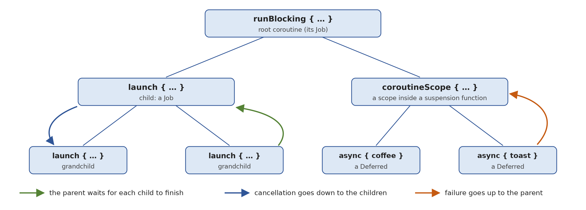

9. Programación asíncrona con corrutinas
El capítulo anterior presentó los hilos: se pueden ejecutar varios fragmentos de código “al mismo tiempo”, sincronizarlos y asignar tareas a un grupo de hilos mediante un ejecutor ([ExecutorService]). Este capítulo aborda un problema relacionado pero distinto: cómo escribir un programa que espera mucho (al disco, a la red o a una base de datos) sin dejar hilos ocupados durante esas esperas.
Este es el capítulo en el que Kotlin más se aparta de Java. El curso de Java presentó dos soluciones: la clase [CompletableFuture<T>], cuyo comportamiento se extiende mediante métodos de callback, y los hilos virtuales de Java 21, que permiten escribir código bloqueante sin bloquear ningún hilo del sistema. Ambas herramientas siguen disponibles en Kotlin (son clases del JDK) y volveremos sobre ellas. Pero Kotlin ofrece una solución propia: las corrutinas:
- el lenguaje incluye una única palabra clave, [suspend], que marca una función de suspensión: una función que puede pausarse en mitad de su ejecución, liberar el hilo que la ejecuta y reanudarse más tarde en el mismo punto con los mismos valores de variables locales;
- el compilador transforma cada función de suspensión en una “máquina de estados” capaz de pausarse y reanudarse; veremos cómo;
- Todo lo demás lo aporta una biblioteca, kotlinx.coroutines: lanzar corrutinas ([launch], [async]), esperarlas ([join], [await]), esperar sin bloquear ([delay]), elegir los hilos que las ejecutan (los despachadores), cancelarlas, limitar su duración y pasar valores entre ellas ([Flow], [Channel]).
El código resultante se lee de arriba abajo como código secuencial: equivale a las palabras clave de C# [async] / [await], que los lectores del curso original conocen, más un concepto que ni C# ni Java (salvo en una forma preliminar) ofrecen: la concurrencia estructurada, que organiza las corrutinas en un árbol donde cada nodo espera a sus hijos, los cancela y recibe sus errores.
Las corrutinas son hoy omnipresentes en el ecosistema de Kotlin: en Android, en los frameworks web (Ktor, Spring, que acepta funciones [suspend] en sus controladores), en los clientes HTTP y en los controladores de bases de datos. Los capítulos siguientes las usarán para acceder a bases de datos y a la red.
La biblioteca kotlinx.coroutines no forma parte de la biblioteca estándar: el proyecto Gradle de este capítulo, ubicado en la carpeta [09-async], la declara en su archivo [build.gradle.kts]:
- línea 17: la dependencia de la biblioteca kotlinx.coroutines, versión 1.11.0. El paquete principal es [kotlinx.coroutines];
- líneas 32–34: como en los capítulos anteriores, el programa que se ejecuta se identifica mediante la propiedad [main]: [gradlew -q run -Pmain=async01.Async01Kt];
- líneas 42–45: los programas lanzados por Gradle escriben su salida en UTF-8 para que los caracteres acentuados se muestren correctamente en Windows (capítulo 2).
Los programas de este capítulo se organizan, como de costumbre, en paquetes que llevan su nombre: [src/main/kotlin/async01/Async01.kt], [src/main/kotlin/async02/Async02.kt]… Muchos de ellos miden duraciones con [System.nanoTime()]: los milisegundos mostrados varían de una ejecución a otra y de una máquina a otra (los ejemplos se ejecutaron en una máquina de dos procesadores). Lo que importan son los órdenes de magnitud: 1 segundo o 10 segundos, 300 ms o 0 ms. El primer uso de corrutinas en un programa carga las clases de la biblioteca, lo que suele añadir algunas decenas de milisegundos a las primeras mediciones.
9.1. Por qué la asincronía
9.1.1. Operaciones que esperan
Un programa realiza dos tipos de trabajo:
- tareas de cálculo, que ocupan el procesador: ordenar una lista, calcular un impuesto, analizar un texto;
- entrada/salida (E/S), que consiste esencialmente en esperar a un dispositivo: leer un archivo del disco, enviar una solicitud a un servidor web y esperar su respuesta, ejecutar una consulta SQL en un servidor de bases de datos.
Los órdenes de magnitud son muy distintos. Un procesador ejecuta unos pocos miles de millones de instrucciones por segundo. Una operación de lectura en un disco (SSD) tarda del orden de una décima de milisegundo; un viaje de ida y vuelta por una red local tarda una fracción de milisegundo; un viaje de ida y vuelta a un servidor ubicado al otro lado del país tarda algunas decenas de milisegundos; y una consulta SQL algo compleja puede tardar a veces varios segundos. Durante estas esperas, el procesador habría podido ejecutar millones de instrucciones.
Cuando un programa lee una línea a través de una conexión de red mediante una función bloqueante, el hilo que realiza esa lectura queda bloqueado: no hace nada, pero sigue existiendo. Un hilo “clásico” de la JVM (hoy llamado “hilo de plataforma”) es un hilo del sistema operativo: ocupa memoria (su pila, del orden de un megabyte), el sistema lo reconoce y, sobre todo, ya no está disponible para hacer otra cosa. Esto no es un problema en un pequeño programa de consola que hace una sola cosa a la vez. Es mucho más grave en dos situaciones:
- en un servidor: cada cliente atendido por un hilo bloqueado mantiene ocupado ese hilo. Si el grupo de hilos del servidor tiene N hilos y los N están realizando una operación bloqueante, no queda ningún hilo disponible para un cliente nuevo. Un servidor moderno atiende miles de solicitudes simultáneas: esto es posible porque sus operaciones de espera no ocupan hilos del sistema;
- en una interfaz gráfica de usuario: un único hilo, el hilo de la interfaz (el hilo principal de una aplicación Android, el “Event Dispatch Thread” de Swing, el “JavaFX Application Thread”), atiende los clics y vuelve a dibujar las ventanas. Si una descarga lo bloquea, la ventana se congela; en Android, el sistema llega incluso a proponer al usuario que cierre la aplicación.
La asincronía consiste en iniciar la operación de E/S, liberar el hilo del sistema mientras se ejecuta (el hardware y el sistema operativo no lo necesitan para transferir los datos) y luego reanudar el trabajo cuando la operación termina, posiblemente en otro hilo. Los hilos virtuales de Java lo logran en el nivel de la JVM: un hilo virtual bloqueado se separa de su hilo anfitrión, que mientras tanto sigue ejecutando otros hilos virtuales. Las corrutinas de Kotlin lo logran en el nivel del código compilado: una corrutina en espera queda suspendida, es decir, su estado (el punto donde se detuvo y sus variables locales) se guarda en un objeto del montón llamado continuación, y el hilo que la ejecutaba se devuelve a su grupo:

- En [1], el hilo del sistema T1 ejecuta una función bloqueante; permanece bloqueado hasta que termina la E/S;
- En [2], la corrutina C1 llama a una función de suspensión que inicia la E/S; la corrutina queda suspendida: su continuación se guarda en el montón y el hilo T1 que la ejecutaba puede ejecutar de inmediato otras corrutinas. Cuando la E/S termina, un hilo libre, T2 (que también podría ser T1), reanuda la continuación, y C1 continúa su ejecución inmediatamente después de la llamada a la función de suspensión, como si nada hubiera pasado.
El programa [Async01.kt] mide la diferencia con 100 operaciones, cada una de las cuales espera un segundo (la espera simula una E/S). Usa instrucciones que explicaremos más adelante en este capítulo ([runBlocking], [launch], [delay]): aquí nos interesan sobre todo los resultados.
Resultados:
Comentarios:
- líneas 19–25: la solución más simple, un hilo de plataforma por operación. La función [thread { … }] de [kotlin.concurrent] (capítulo 8) crea e inicia un hilo; [List(NB_OPERATIONS) { … }] construye la lista de 100 hilos. Cada hilo ejecuta [Thread.sleep(1000)]: queda bloqueado durante un segundo. Las 100 esperas ocurren simultáneamente y todo el proceso dura exactamente un segundo (línea 4 de los resultados), pero al costo de 100 hilos adicionales del sistema: la JVM cuenta 106 (línea 3). Con 10 000 operaciones, harían falta 10 000 hilos del sistema;
- líneas 27–34: las operaciones se asignan a un grupo de 10 hilos ([Executors.newFixedThreadPool(10)]), un tamaño razonable para cálculos. Pero aquí estos hilos no realizan cálculos: están inactivos. Las operaciones esperan un hilo libre, en lotes de 10, y todo el proceso dura… diez segundos (línea 6). Esto se conoce como “inanición del grupo de hilos” (thread pool starvation), el defecto más común en los servidores que mezclan grupos de hilos con E/S bloqueante. Un [ExecutorService] es [AutoCloseable] (Java 19): la función [use] llama a su método [close()] al final del bloque, lo que rechaza las tareas nuevas y espera a que terminen las ya enviadas ([use] cumple el mismo papel que [try] con un recurso en Java);
- líneas 36–43: un hilo virtual por operación. El código de la tarea es el mismo que en el paso 1: un [Thread.sleep(1000)]bloqueante. Sin embargo, un hilo virtual bloqueado no bloquea ningún hilo del sistema. Las 100 esperas juntas duran un segundo (línea 8), y la JVM tiene solo 10 hilos del sistema (línea 7): sus hilos de servicio y los dos hilos portadores, uno por procesador. Esta es la solución del curso de Java;
- líneas 45–53: una corrutina por operación. [runBlocking { … }] ejecuta un bloque de código como una corrutina en el hilo que lo llama (aquí, el hilo [main]), y no devuelve el control hasta el final de esta corrutina y de todas las que ha lanzado. Dentro del bloque, [launch { delay(1000) }] lanza una nueva corrutina que espera un segundo: [delay] es una función de suspensión que suspende la corrutina sin bloquear el hilo. Las 100 corrutinas las ejecuta un único hilo, [main]: mientras ellas esperan, no les debe nada y ejecuta las demás. La JVM sigue teniendo 10 hilos (línea 9): ni uno más que en el paso anterior. Todo el proceso dura poco más de un segundo (línea 10), y el tiempo adicional proviene de la carga de las clases de la biblioteca, que ocurre en este primer uso;
- línea 50: para medir el número de hilos a mitad del proceso, la corrutina principal también espera con [delay]. Con [Thread.sleep], bloquearía el hilo [main], que es el único que ejecuta las 100 corrutinas: estas no podrían comenzar hasta que terminara esta espera. Volveremos sobre esta diferencia clave entre [delay] y [Thread.sleep];
- líneas 55–62: cien mil corrutinas, ejecutadas siempre únicamente por el hilo [main], sin ningún hilo adicional (línea 11). Una corrutina suspendida es simplemente un pequeño conjunto de objetos del montón, de unas pocas decenas de bytes cada uno: puede haber cientos de miles. Crear las 100 000 corrutinas y sus temporizaciones lleva por sí mismo algo de tiempo (unos cientos de milisegundos en la máquina del ejemplo, de ahí el tiempo mostrado en la línea 12); en cambio, crear 100 000 hilos de plataforma sería sencillamente imposible en la mayoría de las máquinas;
- línea 75: [ManagementFactory.getThreadMXBean().threadCount] devuelve el número de hilos de plataforma activos de la JVM. En Kotlin, el método Java [getThreadCount()] se trata como una propiedad, [threadCount];
- La función [thread] y sus ejecutores usan [Thread.sleep] directamente: Kotlin no tiene excepciones comprobadas (capítulo 3), por lo que no es necesario capturar la [InterruptedException] que [Thread.sleep] podría lanzar, como sí hacía el método [waitFor] del programa Java.
Recordemos la lección: para esperar, no se debe bloquear ningún hilo del sistema. La asincronía no hace que la E/S sea más rápida; permite manejar muchas operaciones de E/S simultáneamente con pocos hilos y mantener disponibles los hilos que la aplicación necesita. Kotlin ofrece dos enfoques: escribir código bloqueante ordinario ejecutado por hilos virtuales (paso 3, como en Java), o escribir funciones de suspensión ejecutadas por corrutinas (pasos 4 y 5). Este capítulo se centra en el segundo enfoque.
9.1.2. Varios modelos sucesivos
Las plataformas han ofrecido varias maneras de escribir código que espera sin bloquear. Las más antiguas todavía se encuentran en el código existente, y Kotlin, que usa directamente las bibliotecas de Java, convive con ellas: conviene saber reconocerlas.
Modelo | Aparición | Principio |
Hilos y ejecutores | Java 1.0 (1996), Java 5 (2004) | un hilo por operación, o un grupo de hilos ([ExecutorService]). [submit] devuelve un [Future<T>], que representa el resultado futuro, pero la única manera de obtenerlo es esperar, de forma bloqueante, con [get()]. |
métodos de callback | Java 7 (NIO.2, 2011), JavaScript | Se inicia una operación pasándole un objeto o una función de callback ([CompletionHandler] de NIO.2), a la que llama, al terminar la operación, un hilo de un grupo. |
futuros componibles | Java 8 ([CompletableFuture], 2014), promesas (promises) de JavaScript | un objeto que representa la operación en curso y cuyos pasos posteriores se componen mediante métodos ([thenApply], [thenCompose], [exceptionally]…); las bibliotecas reactivas (Project Reactor, RxJava) se basan en las mismas ideas. |
[async] / [await] | C# 5 (2012), seguido de JavaScript, Python, Rust… | [async] métodos que devuelven una tarea ([Task<T>] en C#); [await] suspende el método hasta que la tarea termina, sin bloquear el hilo. El compilador transforma el método en una máquina de estados. |
Corrutinas de Kotlin | Kotlin 1.3 (2018) | Las funciones como [suspend] son transformadas por el compilador en máquinas de estados, y la biblioteca kotlinx.coroutines aporta la concurrencia estructurada. Las llamadas a funciones de suspensión no incluyen ninguna palabra clave: el código adopta la forma de código secuencial. |
Hilos virtuales | Java 21 (2023) | Código bloqueante ordinario, ejecutado por hilos virtuales: la JVM libera el hilo del sistema durante las esperas. |
Los métodos de callback tienen un inconveniente: el código se fragmenta. Lo que naturalmente se lee como “conectar, luego leer, luego mostrar” se convierte en una función que inicia la conexión, una función de callback que inicia la lectura y otra función de callback que muestra los datos; las variables deben compartirse entre estas funciones, las excepciones se capturan en lugares distintos, y un simple bucle (“leer mientras haya datos”) se convierte en una función de callback que se llama a sí misma recursivamente. Los futuros componibles hacen esta fragmentación más legible al encadenar los pasos; las corrutinas la eliminan por completo: el código asíncrono adopta la forma de código síncrono. La diferencia con los hilos virtuales es que es el compilador, y no la JVM, quien divide el código en los puntos de espera.
El programa [Async02.kt] implementa el mismo cliente TCP con ambos modelos extremos: primero con los métodos de callback de NIO.2 y luego con una corrutina. También contiene un pequeño servidor, ejecutado por un hilo, que responde a dos clientes (la programación de red se tratará en detalle en el capítulo 12; por ahora basta saber que un cliente se conecta al servidor y lee el mensaje que este le envía).
1 2 3 4 5 6 7 8 9 10 11 12 13 14 15 16 17 18 19 20 21 22 23 24 25 26 27 28 29 30 31 32 33 34 35 36 37 38 39 40 41 42 43 44 45 46 47 48 49 50 51 52 53 54 55 56 57 58 59 60 61 62 63 64 65 66 67 68 69 70 71 72 73 74 75 76 77 78 79 80 81 82 83 84 85 86 87 88 89 90 91 92 93 94 95 96 97 98 99 100 101 102 103 104 105 106 107 108 109 110 111 112 113 | |
Resultados:
Comentarios:
- líneas 23–36: el servidor. Escucha en el puerto 27500 de la máquina local ([InetAddress.getLoopbackAddress()], es decir, 127.0.0.1), acepta dos conexiones una tras otra y envía a cada cliente un mensaje de bienvenida después de medio segundo. Lo ejecuta un hilo de plataforma llamado [server], creado por la función [thread] con el argumento nombrado [name]. Las funciones [use] cierran el [ServerSocket] y cada [Socket] de servicio al final de su bloque;
- líneas 38–71: el cliente escrito con métodos de callback:
- línea 40: un [AsynchronousSocketChannel] es un canal TCP cuyas operaciones son asíncronas;
- línea 43: [connect] inicia la conexión y devuelve el control de inmediato (línea 3 de los resultados). Sus dos últimos parámetros son un objeto arbitrario que recibirá el método de callback (aquí, [Unit], ya que no lo necesitamos) y el objeto de callback, que implementa la interfaz [CompletionHandler<V, A>], donde [V] es el tipo del resultado de la operación ([Void?] para una conexión, que no devuelve nada) y [A] es el tipo del objeto pasado. Kotlin permite crear este objeto en el momento mediante una expresión de objeto ([object : CompletionHandler<Void?, Unit> { … }]), equivalente a las clases anónimas de Java. Su método [completed] se llama si la operación tiene éxito, y su método [failed] si falla;
- líneas 44–48: una vez conectado, la lectura se inicia con
*[read]*, especificando un segundo objeto de callback anidado dentro del primero; - líneas 49–54: el objeto de callback de lectura recibe el número de bytes leídos, muestra el mensaje, cierra el canal y libera el hilo principal;
- línea 71: el hilo principal ya no tiene nada que hacer. Para que el programa no termine antes del final del intercambio, espera una señal del último método de callback: un
*[CountDownLatch]inicializado en 1, cuyo método*[await]*bloquea el hilo que lo llama hasta que otro hilo llama a su método*[countDown];
- los resultados muestran que los métodos de callback son ejecutados por hilos distintos del hilo principal (hilos del grupo de la JVM dedicado a los canales asíncronos, llamados [InnocuousThread-N]). El anidamiento de los dos objetos de callback ya dificulta seguir el código; con tres o cuatro operaciones sucesivas, se llega a lo que se conoce como “callback hell” (infierno de callbacks);
- líneas 73–88: el mismo cliente escrito con una corrutina lanzada por [runBlocking]. El código se lee de arriba abajo igual que el código síncrono: conectar, leer, mostrar. Las variables son variables locales ordinarias; los errores se manejan con un único [try / catch]; no hay objetos de callback anidados ni señales que administrar. Sin embargo, ningún hilo espera la conexión ni la respuesta del servidor: [connectTo] y [readInto] son funciones de suspensión, que suspenden la corrutina durante la operación;
- líneas 92–99: la función [connectTo] convierte la operación basada en callback en una función de suspensión. Es una función de extensión (capítulo 4) de [AsynchronousSocketChannel], marcada con [suspend]. La función [suspendCancellableCoroutine] de kotlinx.coroutines suspende la corrutina que la llama y pasa al bloque la continuación de esa corrutina, es decir, el objeto que permite reanudarla. El bloque inicia la operación con un objeto de callback que, al terminar la operación, reanuda la corrutina: ya sea devolviendo un valor ([resume]) o haciendo que lance una excepción ([resumeWithException]). El método de callback no hace nada más: toda la lógica del cliente permanece dentro de la corrutina;
- líneas 104–107: la operación de lectura, también convertida en una función de suspensión que devuelve el número de bytes leídos;
- el final de los resultados muestra que la corrutina imprime en el hilo [main], tanto antes como después de las dos suspensiones: el método de callback, ejecutado por un [InnocuousThread], reanuda la continuación, pero esta se reenvía al hilo de [runBlocking]. En la sección sobre los despachadores veremos cómo se elige el hilo que ejecuta el resto de una corrutina.
Es importante comprender este mecanismo, ya que se aplica a todas las corrutinas: una corrutina suspendida es una continuación pendiente, y una continuación no es más que un método de callback, pero uno que el propio compilador genera a partir del resto del código. Rara vez hay que escribir uno mismo funciones como [connectTo]: la biblioteca kotlinx.coroutines y otras bibliotecas de Kotlin ofrecen funciones de suspensión para la mayoría de las operaciones. Pero si necesita usar una API que solo ofrece métodos de callback, [suspendCancellableCoroutine] permite transformarla en pocas líneas.
9.2. Operaciones futuras: CompletableFuture y Deferred
9.2.1. CompletableFuture visto desde Kotlin
Un [Future<T>] (interfaz del paquete [java.util.concurrent], Java 5) es un objeto que representa el resultado, de tipo [T], de una operación en curso o ya terminada. Lo encontramos en el capítulo anterior: es lo que devuelve el método [submit] de un ejecutor. Se lo puede consultar (¿terminó? ¿tuvo éxito?), cancelar ([cancel]) y esperar su resultado ([get]), pero nada más: la única forma de usar el resultado es bloquear un hilo hasta que esté disponible.
La clase [CompletableFuture<T>] (Java 8) implementa [Future<T>] y agrega dos características clave:
- se puede terminar uno mismo, ya sea con un resultado ([complete]) o con una excepción ([completeExceptionally]);
- se le puede asociar un procesamiento posterior, es decir, una función que se ejecutará cuando el resultado esté disponible ([thenApply], [thenAccept], [thenCompose]…), y que produce un nuevo [CompletableFuture]. Esto permite construir cadenas de operaciones sin que ningún hilo tenga que esperar.
Un [CompletableFuture] no es un hilo. Puede representar un proceso ejecutado por un hilo de un ejecutor (como ocurre con los creados por [supplyAsync]), pero muchos no los ejecuta ningún hilo: el que devuelve el método [sendAsync] del cliente HTTP del JDK se completa cuando llega la respuesta del servidor. Es una promesa de un resultado.
Los programadores de Kotlin encuentran [CompletableFuture] cada vez que usan una biblioteca Java asíncrona: el cliente HTTP del JDK, ciertos controladores de bases de datos, clientes de servicios en la nube, etc. Deben saber manejarlos y, sobre todo, vincularlos con corrutinas. El programa [Async03.kt] es una versión en Kotlin del programa Java que demostraba las principales formas de crear, consultar y esperar un [CompletableFuture]:
Resultados:
Comentarios:
- líneas 10–17: [CompletableFuture.supplyAsync(supplier)] pasa a un ejecutor una función sin parámetros (un [Supplier<T>]de Java) y devuelve de inmediato un [CompletableFuture<T>] que representa su ejecución. Gracias a la conversión SAM (capítulo 7), se le pasa una lambda de Kotlin, colocada fuera de los paréntesis; su última expresión, [sum], es el resultado. Sin un ejecutor explícito, la función la ejecuta el grupo compartido de la JVM, [ForkJoinPool.commonPool()];
- línea 19: el método [state()] (Java 19) devuelve el estado de la operación: [RUNNING] (en curso), [SUCCESS] (terminada con éxito), [FAILED] (terminada con una excepción) o [CANCELLED] (cancelada). Son las constantes de la enumeración [Future.State];
- línea 21: [join()] espera a que termine la operación y devuelve su resultado. Es una espera bloqueante: el hilo actual queda detenido (en este caso el hilo principal, lo que no molesta en un pequeño programa de consola);
- líneas 24–28: un [CompletableFuture] creado “en curso” mediante su constructor y terminado por un temporizador después de 300 ms ([completeOnTimeout], Java 9): es el equivalente asíncrono de [Thread.sleep(300)]. En Java, una operación sin resultado tiene el tipo [CompletableFuture<Void>]; en Kotlin se puede escribir [CompletableFuture<Unit>], cuyo único valor es [Unit];
- líneas 30–34: [completedFuture(42)] devuelve un [CompletableFuture] ya completado cuyo resultado es 42, y [failedFuture(exception)] devuelve un [CompletableFuture] que ya ha fallado; el tipo del resultado de este último no puede inferirse de su argumento, por lo que se especifica entre paréntesis angulares: [failedFuture<Int>(...)]. [resultNow()] y [exceptionNow()] (Java 19) devuelven de inmediato el resultado o la excepción de una operación terminada, sin esperar;
- líneas 36–41: una operación cuya función lanza una excepción termina en el estado [FAILED]. La excepción se almacena en el [CompletableFuture], y [join()] lanza una [CompletionException] cuya causa ([cause], el método [getCause()] tratado como una propiedad) es la excepción original, en este caso una [NumberFormatException] lanzada por ["abc".toInt()];
- líneas 44–48: [get()], el método heredado de la interfaz [Future], también espera de forma bloqueante, pero envuelve la excepción en una [ExecutionException]. En Java, esta es una excepción comprobada, que el método [main] debía capturar o declarar, así como la [InterruptedException] que [get()] puede lanzar. Kotlin no tiene excepciones comprobadas: se interceptan solo las que interesan, y nada más;
- líneas 51–56: una continuación. [f2.thenApply { 2 * 21 }] devuelve un nuevo [CompletableFuture] que se completará con el resultado de la función una vez que [f2] se complete: esto produce un [CompletableFuture<Int>]. [thenAccept] asocia una función que consume el resultado sin producir ninguno y devuelve un [CompletableFuture<Void>] (este es un método de Java: su tipo de retorno es [Void], que Kotlin no transforma en [Unit]);
- líneas 58–60: los métodos booleanos [isDone()] (terminado, sin importar cómo), [isCompletedExceptionally()] (terminado con una excepción o cancelado) e [isCancelled()] (cancelado): Kotlin los representa como propiedades: [isDone], [isCompletedExceptionally] e [isCancelled].
El curso de Java dedicaba luego varias páginas a la composición de los [CompletableFuture]: [thenCompose], [thenCombine], [allOf], [anyOf], [exceptionally], [handle], [orTimeout]… En Kotlin casi nunca se necesitan estos métodos: basta con esperar el [CompletableFuture] en una corrutina, mediante la función de suspensión [await()], y luego escribir el resto como código normal. La siguiente tabla compara los métodos de [CompletableFuture] con sus equivalentes en corrutinas (todas estas funciones se tratan en este capítulo):
[CompletableFuture] | corrutinas |
[supplyAsync(f)], [runAsync(r)] | [async { … }] (devuelve un [Deferred<T>]), [launch { … }] (devuelve un [Job]) |
[completedFuture(v)], [complete(v)] | un valor único; [CompletableDeferred] para completar manualmente una operación |
[thenApply(f)], [thenAccept(c)], [thenRun(r)] | [val v = operation()] seguido del resto del código |
[thenCompose(f)] | dos llamadas consecutivas a funciones de suspensión |
[thenCombine(other, f)], [allOf(...)] | [async], seguido de [await] y [awaitAll] |
[anyOf(...)] | [select] |
[exceptionally(f)], [handle(f)], [whenComplete(c)] | [try / catch / finally] |
[orTimeout(...)], [completeOnTimeout(...)] | [withTimeout], [withTimeoutOrNull] |
[cancel] | [cancel], que realmente termina la operación (reversión cooperativa) |
[join()], [get()] | [await()], [join()]: esperas que suspenden la corrutina en lugar de bloquear el hilo |
9.2.2. Deferreds
El equivalente en corrutinas de un [CompletableFuture<T>] es la interfaz [Deferred<T>] (“diferido”) de kotlinx.coroutines: el resultado futuro de una corrutina. Se obtiene lanzando una corrutina con la función [async] y esperando su resultado con la función de suspensión [await()]. Un [Deferred<T>] es un caso particular de [Job], la interfaz que representa una corrutina en ejecución o ya terminada, sin resultado; un *[Job]* se obtiene lanzando una corrutina con la función *[launch]*, y se espera su finalización con la función de suspensión *[join()]*.
El programa [Async04.kt] demuestra el [Deferred], el [Job] y el paso de uno a otro [CompletableFuture] y viceversa:
Resultados:
Comentarios:
- línea 17: la función [main] es una expresión [runBlocking { … }]. El bloque lo ejecuta como una corrutina el hilo [main], y [runBlocking] no devuelve el control hasta el final de esta corrutina. Dentro de este bloque se pueden llamar funciones de suspensión ([await], [delay]…) y lanzar otras corrutinas ([async], [launch]): el bloque recibe implícitamente un [CoroutineScope] (un ámbito de corrutinas), del cual [async] y [launch] son funciones de extensión. Volveremos sobre esto en la sección sobre la concurrencia estructurada;
- líneas 18–25: [async] lanza una nueva corrutina que ejecuta el bloque y devuelve de inmediato un [Deferred<Long>] que representa su resultado (la última expresión del bloque). El parámetro [Dispatchers.Default] hace que la corrutina la ejecute un grupo de hilos dedicado a los cálculos: sin él, la corrutina la ejecutaría el hilo de [runBlocking] y no comenzaría hasta que la corrutina principal se suspendiera por primera vez;
- línea 27: el estado de una corrutina está determinado por tres propiedades de [Job]: [isActive] (en curso), [isCompleted] (terminada, sin importar cómo) e [isCancelled] (cancelada o fallida, como veremos más adelante). La función [state] (líneas 74–75) las muestra;
- línea 29: [await()] espera a que la corrutina termine y devuelve su resultado. A diferencia de [join()] en un [CompletableFuture], esta espera no bloqueael hilo: es una función de suspensión, que suspende la corrutina principal; mientras tanto, el hilo [main] está disponible para otras corrutinas;
- líneas 32–38: una corrutina que espera 300 ms con
*[delay]* y luego devuelve una cadena: ningún hilo queda ocupado durante la espera; - líneas 40–46: [launch] lanza una corrutina que no devuelve ningún resultado y devuelve un [Job]. [join()] suspende la corrutina principal hasta que esta corrutina termina. [launch] / [Job] son a las corrutinas lo que [runAsync] / [CompletableFuture<Void>] son al mundo de [CompletableFuture];
- líneas 48–55: una corrutina que falla. [await()] vuelve a lanzar la excepción original, una [NumberFormatException], sin envolverla en otra excepción: se intercepta como si la llamada se hubiera hecho directamente. El estado mostrado indica que un [Job] fallido tiene [isCancelled=true]: para kotlinx.coroutines, un fallo es una forma de cancelación. El bloque [supervisorScope] es necesario aquí por una razón que veremos en la sección sobre excepciones: sin él, el fallo de una corrutina se propagaría a la corrutina que la lanzó y habría terminado todo el programa;
- líneas 59–61: la función de extensión [CompletableFuture<T>.await()], del paquete [kotlinx.coroutines.future], espera un [CompletableFuture] suspendiendo la corrutina, sin bloquear ningún hilo. Esto sirve de puente entre las bibliotecas Java asíncronas y las corrutinas: una llamada [client.sendAsync(request, handler).await()] espera la respuesta de un servidor web, como veremos más adelante en este capítulo. Si el [CompletableFuture] falla, [await()] lanza la excepción original, sin su envoltorio [CompletionException];
- líneas 63–65: a la inversa, [asCompletableFuture()] presenta un [Deferred] como un [CompletableFuture], por ejemplo, para pasarlo a código Java que no admite corrutinas;
- líneas 66–71: la función [future { … }] lanza una corrutina y devuelve directamente un [CompletableFuture]: así se escribe en Kotlin, con corrutinas, un método asíncrono destinado a código Java. En la línea 71, este
*[CompletableFuture]se compone con*[thenApply], y luego se espera el resultado con*[await()]*.
9.3. Funciones de suspensión
9.3.1. suspend, launch, async y await
En Kotlin, una operación asíncrona se escribe como una función de suspensión: una función ordinaria, declarada con el modificador *[suspend] , que devuelve directamente su resultado (en lugar de un *[CompletableFuture] o un *[Deferred]* que lo representaría):
- [suspend fun makeCoffee()] para una operación que no devuelve ningún resultado;
- [suspend fun countSugars(number: Int): Int] para una operación que devuelve un entero.
Una función de suspensión puede llamar a otras funciones de suspensión, como [delay], [await] y [join], y es durante estas llamadas cuando puede suspenderse. Solo puede ser llamada por otra función de suspensión o desde una corrutina (el cuerpo de un [runBlocking], de un [launch] o de un [async]); el compilador lo impone. Esta es la única restricción: en su interior se escribe código ordinario, con bucles, [if], [try / catch] y variables locales.
Una llamada a una función de suspensión no incluye ninguna palabra clave: donde C# escribe [await MakeCoffeeAsync()], Kotlin escribe [makeCoffee()]. Y esta llamada es secuencial: la línea siguiente se ejecuta solo después de que la función llamada haya terminado. Para realizar varias operaciones en paralelo, hay que indicarlo explícitamente lanzando nuevas corrutinas con [launch] o *[async]*. Es una decisión deliberada de los diseñadores de Kotlin: el código secuencial es la norma, por lo que debe ser el más simple de escribir; la concurrencia debe ser explícita.
El tutorial de Java preparaba café y contaba terrones de azúcar, primero con [CompletableFuture] encadenados con [thenRun] y [thenCompose], y luego con código bloqueante ejecutado por hilos virtuales. El programa [Async05.kt] prepara el mismo café con funciones de suspensión:
Resultados:
Comentarios:
- líneas 34–41: una operación sin valor de retorno escrita como una función normal: una instrucción de impresión, una espera de un segundo, una instrucción de impresión, una espera de medio segundo, una instrucción de impresión. [delay] es la función de suspensión de kotlinx.coroutines, que espera el tiempo indicado (en milisegundos o en forma de una duración [kotlin.time.Duration]: [delay(1.seconds)]) suspendiendo la corrutina. Equivale al método [delay] del programa Java, que devolvía un [CompletableFuture] terminado por un temporizador; pero aquí no hace falta escribir el resto de la función en una continuación: simplemente sigue a la llamada;
- líneas 44–50: una operación que devuelve un entero. El bucle es un bucle de verdad, que espera en cada iteración: esa es la única diferencia con la versión Java que usaba [CompletableFuture], donde el bucle construía una cadena de [thenCompose] en lugar de ejecutar iteraciones (y donde hacía falta una variable [number], copia de [i], para la lambda);
- línea 16: [launch] lanza una nueva corrutina que ejecuta [makeCoffee()] y devuelve de inmediato un [Job];
- línea 19: [async] lanza una nueva corrutina que ejecuta [countSugars(3)] y devuelve de inmediato un [Deferred<Int>];
- líneas 22–23: la corrutina principal espera ambas operaciones; queda suspendida durante estas esperas;
- las líneas 2 a 12 de la salida muestran la ejecución: el café está listo después de 1,5 segundos (la duración de la más larga de las dos operaciones) y los sobres de azúcar se contaron mientras la máquina se calentaba. Pero también muestran una diferencia con los programas Java: la máquina no comienza a calentarse (línea 6) hasta después de la última instrucción de impresión del programa principal (línea 5). Todas las corrutinas del programa las ejecuta un único hilo, [main], que pertenece a [runBlocking]: [launch] y [async] no ejecutan de inmediato la corrutina que crean; en cambio, la colocan en la cola del hilo, que la ejecutará cuando quede libre, es decir, cuando la corrutina principal se suspenda (línea 22). Esto se llama multitarea cooperativa: una corrutina conserva el hilo hasta que se suspende;
- líneas 26–31: las mismas funciones llamadas directamente, sin lanzar una corrutina. Cada llamada termina antes de que comience la siguiente: se prepara el café (1,5 segundos) y luego se cuentan los terrones de azúcar (0,6 segundos), para un total de 2,1 segundos (líneas 13–20 de los resultados). Este es el enfoque correcto cuando una operación depende del resultado de la anterior;
- línea 54: cada salida muestra el tiempo transcurrido y el hilo que la ejecuta: siempre es [main].
Vemos la misma cualidad que en la versión Java con hilos virtuales: las funciones son funciones ordinarias, que se leen de arriba abajo; la decisión de ejecutarlas de forma secuencial (llamada directa) o concurrente ([launch], [async]) se toma en el momento de la llamada. Sin embargo, a diferencia de los hilos virtuales, un único hilo bastó para todo el programa, y no fue la JVM quien liberó el hilo durante las esperas: fueron las propias funciones de suspensión.
9.3.2. delay y Thread.sleep
Una corrutina libera su hilo solo cuando se suspende, es decir, cuando llama a una función de suspensión que está esperando. Si llama a una función bloqueante ([Thread.sleep], una lectura de archivo o de socket con las clases de [java.io], una solicitud JDBC…), bloquea el hilo que la ejecuta, y todas las corrutinas que dependen de ese hilo quedan en espera. El programa [Async06.kt] ilustra la diferencia:
Resultados:
Comentarios:
- líneas 12–18: dos corrutinas lanzadas en un
*[runBlocking], cada una de las cuales ejecuta tres pasos separados por*[delay(100)]*. Comparten el hilo*[main]: mientras una espera, la otra trabaja; los pasos se alternan (A1, B1, A2, B2…) y los períodos de espera de las dos corrutinas se superponen: todo el proceso dura unos 300 ms, más el tiempo de carga de las clases de la biblioteca en este primer uso (línea 8 de los resultados). La función [runBlocking] no devuelve el control hasta que las dos corrutinas que lanzó han terminado: no hace falta escribir código para esperarlas; - líneas 20–26: las mismas corrutinas, esperando con [Thread.sleep]. Cada espera bloquea el único hilo [main]: la corrutina B no puede comenzar hasta que A haya terminado, y todo el proceso dura 600 ms (líneas 9–15). Las dos corrutinas ya no son realmente corrutinas: se ejecutan una después de la otra;
- líneas 28–34: las corrutinas que contienen código bloqueante se transfieren a otro grupo de hilos, el despachador [Dispatchers.IO], pasándolo como parámetro a [launch]. Cada una bloquea entonces su propio hilo; se ejecutan simultáneamente y todo el proceso vuelve a durar 300 ms (líneas 16–22). Este es el enfoque estándar cuando se necesita llamar a código bloqueante desde corrutinas (como una biblioteca que no ofrece funciones de suspensión, por ejemplo, JDBC); pero esto implica el costo de un hilo del sistema por cada operación en curso. Los hilos de este despachador se llaman [DefaultDispatcher-worker-N]: veremos por qué en la sección sobre los despachadores;
- líneas 37–41: [workWithDelay] llama a [delay]: esta es una función de suspensión;
- líneas 45–49: [workWithSleep] no llama a ninguna función de suspensión: es una función ordinaria. El compilador permite llamarla desde una corrutina, pero IntelliJ IDEA señala las llamadas a funciones bloqueantes conocidas ([Thread.sleep], las operaciones de E/S de [java.io]) colocadas dentro de una función de suspensión o de una corrutina (“Possibly blocking call in non-blocking context”).
De ahí la primera regla de la programación con corrutinas: una función de suspensión nunca debe bloquear su hilo. Si necesita llamar a código bloqueante, lo delega a un despachador diseñado para ese fin ([Dispatchers.IO], o un despachador sobre hilos virtuales), mediante [withContext], que trataremos en breve.
9.3.3. Lo que hace el compilador: continuaciones y máquinas de estados
¿Cómo puede una función de suspensión pausarse en mitad de un bucle, liberar su hilo y luego reanudarse más tarde en el mismo punto, con los mismos valores de variables locales, posiblemente en otro hilo? El curso de Java explicó que, para un hilo virtual, es la JVM quien hace este trabajo: copia la pila de llamadas del hilo virtual en el montón y la restaura allí más tarde. La JVM no sabe nada de las corrutinas de Kotlin: es el compilador quien hace el trabajo, transformando cada función de suspensión. Lo hace en dos pasos.
Primer paso: la continuación se convierte en un parámetro. Cada función [suspend] recibe, en el bytecode, un parámetro adicional de tipo [Continuation<T>] (una interfaz del paquete [kotlin.coroutines] de la biblioteca estándar), donde [T] es el tipo del valor de retorno de la función. Una continuación representa “el siguiente paso del cálculo”: qué hacer con el resultado de la función. Tiene un método [resumeWith(result)], que reanuda la ejecución con un resultado o una excepción (las funciones de extensión [resume(value)] y [resumeWithException(e)] lo llaman), y una propiedad [context], el contexto de la corrutina (volveremos sobre esto). El tipo de retorno de la función pasa a ser [Any?] ([Object] en la JVM): la función devuelve su resultado, si pudo terminar sin esperar, o un valor especial, [COROUTINE_SUSPENDED], que significa “estoy suspendida; mi continuación se reanudará más tarde”. Este es el “estilo de paso de continuaciones” (continuation-passing style, CPS).
Paso 2: el cuerpo de la función se convierte en una máquina de estados. Cada llamada a una función de suspensión dentro del cuerpo es un posible punto de suspensión. El compilador numera estos puntos (el número se denomina [label]) y almacena el número del siguiente punto de reanudación y las variables locales que deben sobrevivir a una suspensión en un objeto de continuación específico de la función. El cuerpo de la función se convierte en un [when] sobre este número: se entra en él una vez al comienzo (label 0), y luego una vez en cada reanudación, y el programa salta directamente al punto donde se había quedado.
El programa [Async07.kt] demuestra todo esto. Usa solo la biblioteca estándar de Kotlin (no kotlinx.coroutines), para que se puedan ver los mecanismos básicos: escribe por sí mismo el equivalente de [delay] y lanza una corrutina por su cuenta.
Resultados:
Comentarios:
- línea 15: un temporizador, es decir, un ejecutor de un solo hilo llamado [timer], capaz de ejecutar una acción después de un retraso ([ScheduledExecutorService], capítulo 8);
- líneas 17–21: la función de suspensión [pause], nuestro propio [delay]. Usa la función [suspendCoroutine] de la biblioteca estándar (de la cual [suspendCancellableCoroutine], que vimos en [Async02.kt], es la versión cancelable de kotlinx.coroutines): [suspendCoroutine] pasa al bloque la continuación de la corrutina actual y luego la suspende. El bloque indica al temporizador que reanude la continuación después del retraso especificado, con el valor [Unit];
- líneas 24–33: una función de suspensión con dos puntos de suspensión (las dos llamadas a [pause]) y variables locales ([a], [b], [x], [y]) que deben sobrevivir a las suspensiones;
- líneas 39–46: se lanza una corrutina manualmente. La función [Continuation(context) { … }] crea una continuación a partir de un bloque que recibe el resultado, de tipo [Result<Int>] (un resultado o una excepción; [getOrThrow()] devuelve el primero o lanza la segunda): esta es la continuación final, que muestra el resultado y notifica al hilo principal. El contexto vacío, [EmptyCoroutineContext], significa que no se solicita nada específico; en particular, ningún despachador. La función de extensión [startCoroutine] inicia una lambda de suspensión ([suspend () -> Int]) como una corrutina, con la continuación final;
- los resultados muestran la ejecución: [startCoroutine] ejecuta la función [addUp] en el hilo [main] hasta el primer punto de suspensión (líneas 3 y 4) y luego cede el control (línea 5): la función devolvió [COROUTINE_SUSPENDED]. 300 ms después, el hilo [timer] reanuda la ejecución: la función [addUp] continúa inmediatamente después de la primera llamada a [pause], con el valor de [x] intacto (línea 6), en un hilo distinto de aquel donde comenzó. Luego vienen la segunda pausa, el final de la función y la continuación final, que recibe el resultado 90 (línea 9). Las corrutinas de kotlinx.coroutines no hacen otra cosa; los despachadores se limitan a especificar qué hilo ejecuta cada continuación.
Veamos qué produjo el compilador. La herramienta [javap] del JDK muestra los miembros de una clase compilada. Gradle coloca las clases compiladas en la carpeta [build/classes/kotlin/main] del proyecto:
- Líneas 6 y 7: las funciones [pause] y [addUp] recibieron un parámetro final de tipo [Continuation], y su tipo de retorno pasó a ser [Object]. El parámetro de continuación de [addUp] tiene el mismo tipo que su resultado: [Continuation<? super Integer>]. Desde la perspectiva de Java, [addUp] es un método ordinario que podría invocarse pasándole una continuación (de hecho, así es como el código Java puede llamar a una función de suspensión, aunque con cierta dificultad);
- Línea 8: la función [main] sin parámetros, junto al método [main(String[])] que el compilador agrega para la JVM (línea 10), como vimos en el capítulo 3.
El compilador también generó una clase llamada [Async07Kt$addUp$1]: es el objeto de continuación de la función [addUp]:
- línea 3: la clase deriva de [ContinuationImpl], una clase interna de la biblioteca estándar que implementa [Continuation];
- líneas 4 a 7: cuatro campos enteros, [I$0] a [I$3], donde la función almacena sus variables locales [a], [b], [x], y [y] antes de cada suspensión;
- línea 8: [result] recibe el resultado (o la excepción) con el que se reanuda la ejecución;
- línea 9: [label], el número del siguiente punto de reanudación;
- línea 11: [invokeSuspend], el método invocado al reanudar, que simplemente llama a la función [addUp], pasándole este objeto de continuación.
Por último, la opción [-c] de [javap] muestra el bytecode de los métodos. Aquí hay dos fragmentos del bytecode de [addUp] (el comando [javap -c -p -cp build/classes/kotlin/main async07.Async07Kt] muestra todo el bytecode):
- En el punto de entrada de la función (antes del fragmento), el bytecode recupera el objeto de continuación de la función si se trata de una reanudación, o crea uno si es la primera llamada;
- [getCOROUTINE_SUSPENDED] lee el valor especial [COROUTINE_SUSPENDED], almacenado en una variable local;
- [tableswitch] es la instrucción de la JVM que corresponde a una operación [when] sobre un entero: según el valor del campo [label] (0, 1 o 2), la ejecución salta al inicio de la función (dirección 92), inmediatamente después de la primera llamada a [pause] (dirección 153), o inmediatamente después de la segunda (dirección 242). Cualquier otro valor produce un error (dirección 295).
- direcciones 112 a 138: antes de la primera llamada a [pause], la función guarda sus variables locales [a], [b] y [x] (variables 0, 1 y 3 de la JVM) en los campos [I$0], [I$1] e [I$2] del objeto de continuación, y establece [label] en 1;
- dirección 141: la llamada a [pause(300)], con el objeto de continuación como último parámetro;
- direcciones 144 a 152: si [pause] devolvió [COROUTINE_SUSPENDED], la función a su vez devuelve [COROUTINE_SUSPENDED] a quien la llamó ([areturn]): así es como la suspensión «sube» por la pila de llamadas hasta [startCoroutine], que devuelve el control al hilo [main]. De lo contrario, la ejecución continúa directamente en la dirección 178;
- direcciones 153 a 170: punto de reanudación n.º 1. La función copia los campos del objeto de continuación en sus variables locales y luego continúa como si nada hubiera pasado.
Por lo tanto, la pila de llamadas de la JVM nunca se conserva: en cada suspensión, todas las funciones actualmente suspendidas devuelven [COROUTINE_SUSPENDED] y sus marcos de pila desaparecen; lo que debe sobrevivir se almacena en los objetos de continuación, que están encadenados entre sí (cada uno conoce la continuación de quien lo llamó). En cada reanudación, la cadena se recorre en orden inverso. Es el mismo concepto que la «máquina de estados» que el compilador de C# crea para un método [async].
Para comprender a fondo este mecanismo, el programa [Async08.kt] escribe manualmente, en Kotlin, una versión simplificada de lo que el compilador generó para [pause] y [addUp]:
Resultados:
Comentarios:
- Líneas 16–20: la función [pause] tal como la ve el compilador: una función ordinaria (sin [suspend]) que recibe la continuación que debe reanudar, programa su reanudación y devuelve [COROUTINE_SUSPENDED], una constante del paquete [kotlin.coroutines.intrinsics] de la biblioteca estándar;
- líneas 23–29: el objeto de continuación de [addUp]. Conoce la continuación de quien llama ([caller]), los parámetros [a] y [b], el número del siguiente punto de reanudación ([label]) y las variables locales [x] y [y]. Por su parte, el compilador también almacena los parámetros en campos y reutiliza campos genéricos ([I$0]…);
- línea 30: una continuación debe proporcionar el contexto de su corrutina; usamos el de quien llama;
- líneas 33–37: la reanudación. El temporizador llama a [resumeWith] al final de una pausa; el método vuelve a llamar a [addUp] con el objeto de continuación, que sabe dónde reanudar. Si la función se ejecuta hasta el final (no devuelve [COROUTINE_SUSPENDED]), su resultado se pasa a la continuación de quien la llamó: así es como el resultado «viaja de vuelta» desde una función de suspensión hasta la que la llamó;
- líneas 42–63: la máquina de estados. La llamada de [when] a [state.label] dirige la ejecución a la sección correcta de la función. Cada sección termina guardando el siguiente punto de reanudación y llamando a [pause]: si [pause] devuelve [COROUTINE_SUSPENDED], la función también lo devuelve; de lo contrario (una función de suspensión puede ejecutarse hasta el final sin suspenderse, por ejemplo si el resultado ya se conoce), el bucle [while (true)] salta directamente a la siguiente sección. Las variables locales se leen y se escriben en el objeto de continuación ([state.x], [state.y]);
- líneas 76–77: la primera llamada. Los resultados muestran que [addUp] devolvió [COROUTINE_SUSPENDED] (línea 5 de los resultados); el resto del proceso ocurre en el hilo [timer], exactamente como sucedió con [Async07.kt].
Este programa se incluye únicamente con fines ilustrativos: nunca escribiría este código usted mismo. Sin embargo, hay dos conclusiones clave:
- una corrutina suspendida solo cuesta sus objetos de continuación (unas pocas decenas de bytes por función activa), y no una pila de un megabyte como un hilo de plataforma: esto es lo que hizo posibles las 100 000 corrutinas de [Async01.kt];
- la suspensión solo es posible en las llamadas a funciones de suspensión. Una función ordinaria no puede suspenderse: si se bloquea (como [Thread.sleep]), bloquea el hilo. Esta es la diferencia fundamental con los hilos virtuales, donde la JVM puede suspender cualquier código bloqueante escrito en Java. En cambio, las corrutinas no dependen de la JVM: el mismo mecanismo funciona con Kotlin/JS en un navegador de un solo hilo y con Kotlin/Native.
9.3.4. Despachadores: ¿qué hilo ejecuta el resto del código?
Una corrutina no es un hilo: se necesitan hilos para ejecutarla. El componente que decide qué hilo ejecuta una corrutina (al iniciar y luego cada vez que se reanuda) es su despachador, un elemento del contexto de la corrutina. El contexto de una corrutina ([CoroutineContext]) es un pequeño conjunto de elementos indexados por su tipo, que se combinan mediante el operador [+]: el despachador ([CoroutineDispatcher]), el [Job] de la corrutina, su nombre ([CoroutineName]) y su manejador de excepciones ([CoroutineExceptionHandler], del que hablaremos más adelante)… Un contexto se pasa como parámetro a [launch], [async], [runBlocking], o [withContext]; la nueva corrutina hereda los elementos del contexto de su ámbito, excepto aquellos que se sobrescriben.
kotlinx.coroutines proporciona cuatro despachadores, que son propiedades del objeto [Dispatchers]:
Despachador | Hilos utilizados |
[Dispatchers.Default] | Un grupo de hilos para cálculos, que contiene tantos hilos como procesadores haya (al menos dos). Es el despachador que se usa cuando no se especifica ninguno y el ámbito no tiene uno. |
[Dispatchers.IO] | Un grupo de hilos para operaciones bloqueantes (archivos, JDBC, sockets bloqueantes), que puede contener hasta 64 hilos (o más si la máquina tiene más de 64 procesadores; la propiedad del sistema [kotlinx.coroutines.io.parallelism] modifica este límite). Comparte sus hilos con [Dispatchers.Default], lo que evita un cambio de hilo al pasar de uno a otro. |
[Dispatchers.Main] | el hilo de la GUI. Existe solo si se agrega al proyecto el módulo correspondiente: [kotlinx-coroutines-android], [kotlinx-coroutines-swing], [kotlinx-coroutines-javafx]. |
[Dispatchers.Unconfined] | Ningún hilo específico: la corrutina se inicia en el hilo de quien la llama y, después de una suspensión, continúa en el hilo que la reanudó. Se usa principalmente para pruebas y casos muy específicos. |
Además de estos despachadores, está el de [runBlocking], que ejecuta sus corrutinas en el hilo que lo llamó, y los creados a partir de un ejecutor de Java mediante la función de extensión [asCoroutineDispatcher()]. El programa [Async09.kt] muestra el hilo que ejecuta cada fragmento de código:
Resultados:
Comentarios:
- Línea 16: la propiedad del sistema [kotlinx.coroutines.debug] activa el modo de depuración de kotlinx.coroutines (debe establecerse antes del primer uso de la biblioteca; también puede pasarse a la JVM: [-Dkotlinx.coroutines.debug]). En este modo, al nombre del hilo que ejecuta una corrutina se le agrega, durante la ejecución, el nombre de la corrutina (proporcionado por un elemento [CoroutineName] de su contexto, o [coroutine] por defecto) y su número: [main @main#1];
- líneas 18–22: la corrutina de [runBlocking], llamada [main], es ejecutada por el hilo [main], tanto antes como después de la espera: [runBlocking] transforma el hilo que lo llama en un bucle de eventos que ejecuta sus corrutinas (líneas 3 y 4 de los resultados);
- líneas 24–26: una corrutina lanzada en [Dispatchers.Default], cuyo contexto (formado con [+]) consta de un despachador y un nombre; es ejecutada por un hilo llamado [DefaultDispatcher-worker-N] (línea 5);
- líneas 29–31: una corrutina lanzada en [Dispatchers.IO]; es ejecutada por un hilo con el mismo nombre (línea 6), ya que los dos despachadores comparten sus hilos;
- líneas 34–39: [withContext(context) { … }] es una función de suspensión que ejecuta un bloque en un contexto diferente (en este caso, otro despachador) dentro de la misma corrutina (el número sigue siendo [#1]), luego vuelve al despachador original y devuelve el resultado del bloque (líneas 7 y 8). Es el método habitual para ejecutar un cálculo en [Dispatchers.Default] o código bloqueante en [Dispatchers.IO] sin cambiar la forma del código: [val text = withContext(Dispatchers.IO) { file.readText() }];
- líneas 41–45: con [Dispatchers.Unconfined], la corrutina se inicia en el hilo [main] (el hilo de quien la llama, línea 9) y continúa después de [delay] en el hilo que la reanudó: [kotlinx.coroutines.DefaultExecutor], el hilo temporizador de kotlinx.coroutines, que administra los tiempos de espera (línea 10). Este es el comportamiento de las continuaciones no asíncronas de [CompletableFuture] ([thenApply], [thenRun]), que son ejecutadas por el hilo que completa la operación;
- Líneas 48–54: [Executors.newVirtualThreadPerTaskExecutor().asCoroutineDispatcher()] crea un despachador que asigna cada segmento de ejecución de la corrutina a un ejecutor de Java (en este caso, un ejecutor de hilos virtuales). El despachador resultante debe cerrarse cuando ya no se necesita, de ahí [use]. Las líneas 11 y 12 muestran que el comienzo y el resto de la corrutina fueron ejecutados por dos hilos virtuales distintos (n.os 25 y 28): cada reanudación es una nueva tarea asignada al ejecutor, que por lo tanto crea un nuevo hilo virtual. Un despachador así es útil para ejecutar código bloqueante desde corrutinas sin quedar limitado por el tope de 64 hilos de [Dispatchers.IO]: la JVM libera los hilos virtuales mientras están en espera;
- líneas 57–60: dos corrutinas que muestran un mensaje y luego esperan, tres veces seguidas, en [Dispatchers.Default]. [joinAll] espera a que terminen varias corrutinas. Las líneas 13 a 18 muestran que una corrutina no permanece asociada a un solo hilo: la corrutina B se inicia en [worker-2] y continúa en [worker-1]. Por lo tanto, en una corrutina nunca debe suponerse que el código posterior a una suspensión es ejecutado por el mismo hilo que el código anterior. Una consecuencia práctica: una variable [ThreadLocal] (capítulo 8) no es confiable en una corrutina; en su lugar, la información se almacena en el contexto de la corrutina, que la acompaña a todas partes;
- líneas 72–75: para un hilo virtual (cuyo nombre está vacío por defecto) mostramos su descripción completa, que incluye su número, su nombre (aquí, el de la corrutina, agregado por el modo de depuración) y su hilo anfitrión.
Por lo tanto, la elección del despachador es importante:
- [Dispatchers.Default] para cálculos. Una corrutina que realiza un cálculo prolongado ocupa uno de sus hilos, igual que lo haría una tarea en un grupo de hilos: las corrutinas no aceleran los cálculos; facilitan la concurrencia de operaciones de espera (manejar muchas operaciones de espera simultáneamente), no el paralelismo de cálculos (ejecutar varios cálculos al mismo tiempo en varios procesadores, como se vio en el capítulo anterior);
- [Dispatchers.IO], o un despachador de hilos virtuales, para código bloqueante, junto con [withContext];
- [Dispatchers.Main] en una aplicación gráfica: una corrutina lanzada en el hilo de la interfaz puede actualizar los componentes gráficos, esperar una operación (ejecutada en otro lugar mediante [withContext]) sin congelar la interfaz y luego actualizarla con el resultado, sin requerir ningún tratamiento especial: al final de [withContext], la corrutina vuelve automáticamente al hilo de la interfaz. Así funciona C#, donde la continuación de un método [async] vuelve al hilo de la interfaz, y es algo que Java no permite sin pasar explícitamente un ejecutor a cada continuación.
Por último, es posible limitar el número de hilos que un despachador asigna a un conjunto de corrutinas mediante [limitedParallelism(n)]: [val base = Dispatchers.IO.limitedParallelism(10)] devuelve un despachador que nunca ejecuta más de 10 corrutinas a la vez, tomando hilos de [Dispatchers.IO]. Con [limitedParallelism(1)], obtenemos un despachador que ejecuta una sola corrutina a la vez, lo que permite manipular un estado compartido sin bloqueos. Esta característica, estable desde la versión 1.9 de kotlinx.coroutines, se utilizará más adelante en este capítulo, en la sección sobre el paralelismo limitado.
9.3.5. El programa principal
Un programa que usa corrutinas debe lanzar la primera desde el código ordinario de la función [main] y esperar a que termine: de lo contrario, la función [main] terminaría de inmediato, y el programa con ella (los hilos de los despachadores son hilos daemon, que no impiden que la JVM se detenga). Hay dos maneras de hacerlo:
- [fun main() = runBlocking { … }], que hemos usado desde el comienzo del capítulo: [runBlocking] bloquea el hilo [main] hasta el final de la corrutina y de todas las corrutinas que ha lanzado. Este es el único lugar donde una espera bloqueante es normal; nunca debe llamar a [runBlocking] desde una corrutina o una función de suspensión, ya que bloquea su hilo. Cuando la última expresión del bloque no es de tipo [Unit], escribimos [runBlocking<Unit> { … }]; de lo contrario, la función [main] tendría un tipo de retorno distinto y la JVM ya no la reconocería como el programa principal;
- [suspend fun main()]: la función [main] puede ser ella misma una función de suspensión; el compilador se encarga de lanzarla como una corrutina. Esto equivale al método [static async Task Main()] de C#.
El programa [Async10.kt] realiza una cuenta regresiva mediante una función de suspensión [main]:
Resultados, primero con un argumento y luego sin él:
Comentarios:
- línea 7: una función de suspensión [main] que recibe argumentos de línea de comandos pasados mediante Gradle con la opción [--args];
- Línea 9: [singleOrNull()] devuelve el único argumento, o [null] si no hay exactamente uno, y [toIntOrNull()] lo convierte en un entero, o devuelve [null] si no es un entero;
- líneas 10–13: si el argumento falta o es incorrecto, el programa termina con [exitProcess(1)] (una función de [kotlin.system], que llama a [System.exit]). El entero pasado es el código de salida del programa (0 para éxito, cualquier otro valor para un error), que puede verificarse desde un script: [echo %ERRORLEVEL%] en Windows, [echo $?] en Linux. Cuando lo inicia Gradle, un programa que termina con un código distinto de 0 hace que la tarea [run] falle, y Gradle muestra entonces sus propios mensajes de error después de los del programa (aquí no se reproducen). El tipo de [exitProcess] es [Nothing] (capítulo 3): el compilador sabe que esta función nunca retorna y, por lo tanto, considera que después del [if], [nbSeconds] no es [null]; puede utilizarse como un [Int] (conversión inteligente de tipo);
- Líneas 20–24: la cuenta regresiva. Se suponía que el programa Java la implementaba mediante recursión, encadenando cada paso con el siguiente usando [thenCompose]; aquí es un bucle ordinario, con un [delay] en cada iteración;
- Los resultados revelan una peculiaridad de [suspend fun main]: su corrutina no tiene despachador. Se inicia en el hilo [main] y luego, después de las esperas, continúa en el hilo que la reanudó (el hilo temporizador de kotlinx.coroutines, [kotlinx.coroutines.DefaultExecutor]), igual que con [Dispatchers.Unconfined]. Aquí esto no tiene consecuencias, pero es una razón para preferir [fun main() = runBlocking { … }], cuyo comportamiento está mejor definido, o para especificar un despachador mediante [withContext] en el cuerpo de la función.
9.4. Concurrencia estructurada
El curso de Java concluía su capítulo con una visión general de la concurrencia estructurada ([StructuredTaskScope], todavía en fase de vista previa en Java 25). En Kotlin, esto no es solo un complemento: es el principio sobre el que se basa toda la biblioteca kotlinx.coroutines, y es necesario comprenderlo antes de avanzar.
La idea es simple: una corrutina solo puede lanzarse dentro de un ámbito ([CoroutineScope]), y el ámbito no termina hasta que las corrutinas que ha lanzado hayan finalizado. Las funciones [launch] y [async] son funciones de extensión de [CoroutineScope]: no pueden llamarse en cualquier lugar, sino solo dentro de un ámbito, como el bloque de un [runBlocking], un [launch] o un [async], cuyo receptor ([this]) es un ámbito. Cada ámbito tiene un [Job]; cada corrutina lanzada dentro del ámbito tiene su propio [Job], que se convierte en un hijo del [Job] del ámbito. Así, las corrutinas de un programa forman un árbol, cuyas relaciones de padre a hijo tienen tres consecuencias:

- un padre espera a sus hijos: un
*[Job]no termina hasta que su propio código y todos sus hijos hayan terminado. Por eso*[runBlocking]esperaba a las corrutinas lanzadas dentro de su bloque sin necesidad de escribir código alguno; - la cancelación se propaga hacia abajo: cancelar un [Job] cancela a todos sus hijos, y a los hijos de estos;
- el fallo se propaga hacia arriba: si un hijo falla (su código lanza una excepción), su padre se cancela, lo que a su vez cancela a todos sus otros hijos, y la excepción se transmite al padre, luego al padre de este, hasta la raíz o hasta un fragmento de código que la maneje.
Como resultado, ninguna corrutina puede quedar «olvidada»: vive dentro de un ámbito, que no puede terminar sin ella; si falla, alguien lo sabrá; si se abandona la operación de la que forma parte, se termina. Es la misma disciplina que la de los bloques de código en la programación estructurada (un bloque no termina antes que las instrucciones que contiene), aplicada a la concurrencia, de ahí su nombre.
El programa [Async11.kt] ilustra estas tres reglas:
Resultados:
Comentarios:
- línea 14: la última expresión del bloque es una expresión [try] cuyo tipo no es [Unit]; por lo tanto, se especifica el tipo del resultado de [runBlocking], como se indicó en el párrafo anterior;
- Líneas 15–26: una corrutina [parent] lanza dos hijos, que se ejecutan durante 300 y 600 ms, y luego muestra el número de sus hijos: dentro del bloque de un [launch], [coroutineContext] es el contexto de la corrutina, [coroutineContext.job] es su [Job], y la propiedad [children] de este último es la secuencia de sus hijos. El código del padre termina de inmediato (línea 2 de los resultados);
- líneas 28–30: 100 ms después, el [Job] del padre sigue activo, junto con sus dos hijos (línea 3): un [Job] cuyo código ha terminado está esperando a sus hijos;
- líneas 31–32: [join()] no devuelve el control hasta 600 ms después, cuando el segundo hijo ha terminado (líneas 4–6);
- líneas 77–83: la función de suspensión [prepareBreakfast] maneja tres preparaciones de forma simultánea. Para lanzar corrutinas, una función de suspensión requiere un ámbito: [coroutineScope { … }] crea un nuevo ámbito, cuyo [Job] es hijo de la corrutina que llama, ejecuta el bloque, espera a que terminen todas las corrutinas lanzadas dentro del bloque y luego devuelve el valor del bloque. Por lo tanto, la función [prepareBreakfast] parece desde afuera una función secuencial ordinaria: cuando devuelve el control, todo lo que ha lanzado está completo, incluida la corrutina de la línea 82, que nadie espera explícitamente que termine;
- líneas 34–37: la llamada a la función; el desayuno se sirve después de un segundo, la duración de la preparación más larga (líneas 7–13);
- líneas 39–54: un padre lanza dos hijos que esperan diez segundos. Después de 200 ms, [cancelAndJoin()] aborta al padre y espera a que la cancelación se complete: ambos hijos se abortan junto con él (líneas 14–16). Se ejecuta el bloque [finally] de cada hijo, igual que cuando se sale de un bloque mediante una excepción: en la sección sobre cancelación veremos que esto es exactamente lo que sucede;
- líneas 56–73: dentro de un ámbito creado por [coroutineScope], un hijo espera diez segundos y su hermano falla después de 200 ms. El fallo cancela el ámbito, que a su vez cancela al primer hijo (línea 17), y [coroutineScope] lanza la excepción del hijo que falló (línea 18), que es capturada por un [try / catch] estándar que rodea la llamada.
Por lo tanto, dos funciones crean un ámbito, con dos usos distintos:
- [runBlocking] crea el ámbito raíz de un programa desde el código ordinario, bloqueando el hilo;
- [coroutineScope] crea un ámbito dentro de una función de suspensión, sin bloquear ningún hilo. Esta es la forma estándar de escribir una función de suspensión que realiza varias operaciones de manera concurrente: desde afuera, la concurrencia no es visible.
De esto se desprende una regla de estilo: una función de suspensión debe haber terminado todo su trabajo cuando devuelve el control. Una función que lanza corrutinas destinadas a sobrevivirla no debe ser una función de suspensión, sino una función de extensión de [CoroutineScope] (como [launch] misma): [fun CoroutineScope.monitor(): Job]. Su firma indica así que lanza corrutinas dentro del ámbito de quien la llama. Más adelante en este capítulo veremos que la biblioteca también ofrece ámbitos cuyos hijos son independientes entre sí ([supervisorScope]), y cómo crear un ámbito específico para un componente de la aplicación. El final del capítulo comparará la concurrencia estructurada de Kotlin con la de Java.
9.5. Ejecución secuencial y ejecución concurrente
9.5.1. async y awaitAll
Como mostró el ejemplo del café, una llamada a una función de suspensión es secuencial, y para realizar varias operaciones simultáneamente hay que lanzarlas explícitamente en corrutinas. El momento en que una operación se lanza ([val d = async { operation() }]) y el momento en que se espera ([d.await()]) pueden así separarse, lo que permite lanzar otras operaciones entre ambos. El programa [Async12.kt] compara los dos enfoques usando operaciones que tardan un segundo:
Resultados:
Comentarios:
- líneas 60–64: la operación simulada: una espera de un segundo, seguida de una «temperatura» derivada de la longitud del nombre de la ciudad;
- Líneas 14–21: cada operación se llama directamente y por lo tanto termina antes de que comience la siguiente: 3 segundos (línea 2 de los resultados). La función [measureTimedValue { … }] de la biblioteca estándar ([kotlin.time]) ejecuta el bloque y devuelve un objeto [TimedValue], que contiene el valor del bloque y la duración de su ejecución; es una clase de datos, que se descompone en dos variables ([val (sequence, duration1) = …], capítulo 3). La duración es un [Duration], donde [inWholeMilliseconds] representa el número de milisegundos. Dado que el bloque es a [inline], se pueden llamar funciones de suspensión dentro de él;
- líneas 23–28: las tres operaciones se lanzan en tres corrutinas mediante [async] y luego se esperan. Se ejecutan simultáneamente: un segundo en lugar de tres (línea 3). El orden de the [await] calls es irrelevante: la primera espera a que termine la primera operación, mientras que las demás encuentran las suyas ya terminadas o casi;
- Líneas 32–35: el caso de una lista de operaciones. [cities.map { city -> async { … } }] lanza una corrutina por ciudad y produce una lista de [Deferred<Int>]; la función de extensión [awaitAll()] para una colección de [Deferred] espera a todos y devuelve la lista de sus resultados, en el orden de las operaciones (no en el orden en que terminaron). Las seis operaciones juntas tardan un segundo (línea 4). En comparación con la versión Java ([allOf] sobre un arreglo de [CompletableFuture], seguido de una continuación que recopila los resultados con [join]), el código es directo;
- líneas 39–43: lo mismo con una función bloqueante ([readTemperatureBlocking], líneas 67–69), ejecutada en [Dispatchers.IO]: cada operación bloquea un hilo de este despachador; las seis juntas tardan un segundo (línea 5);
- líneas 45–49: con 100 operaciones bloqueantes, el límite de 64 hilos de [Dispatchers.IO] se hace evidente: 64 operaciones, luego las 36 restantes, para un total de dos segundos (línea 6). Es la misma inanición de hilos que ya se encontró con el grupo de 10 hilos de [Async01.kt], pero a mayor escala;
- Líneas 51–56: las mismas 100 operaciones bloqueantes en un despachador de hilos virtuales: un segundo (línea 7), ya que los hilos virtuales bloqueados no retienen ningún hilo del sistema. El parámetro [virtuals] de [use] es el despachador, que se pasa a [async] como contexto.
Los dos últimos pasos demuestran cómo se complementan las corrutinas y los hilos virtuales: las corrutinas para el código escrito con funciones de suspensión, y los hilos virtuales (mediante un despachador) para ejecutar, desde dentro de corrutinas, una gran cantidad de código bloqueante heredado de Java.
9.5.2. La primera operación terminada: select
La función [select] (paquete [kotlinx.coroutines.selects]) suspende la corrutina hasta que ocurre uno de varios eventos, y devuelve el valor asociado a ese evento. Cada evento posible es una cláusula: [onAwait] para el final de un [Deferred] (la cláusula recibe su resultado), [onJoin] para el final de un [Job], [onReceive] para la llegada de un valor a un canal… Es el equivalente de [CompletableFuture.anyOf], con un resultado tipado. El programa [Async13.kt] lo usa de tres maneras:
Resultados:
Comentarios:
- Líneas 62–70: el servidor simulado responde después del tiempo especificado. Si la corrutina que lo consulta se cancela mientras espera, [delay] lanza una [CancellationException]: la capturamos para señalar el problema y luego la relanzamos (en la sección sobre cancelación veremos por qué esto es esencial). [kotlinx.coroutines.CancellationException] es un alias de la clase [java.util.concurrent.CancellationException] del JDK; la excepción que realmente se lanza es de una clase interna de la biblioteca derivada de ella, [JobCancellationException];
- líneas 17–21: se consultan tres servidores espejo; todos contienen la misma información y responden con distinta rapidez, cada uno en una corrutina;
- Líneas 23–26: el bloque [select] declara una cláusula [onAwait] para cada consulta; la lambda de cada cláusula recibe el resultado de la consulta y devuelve el valor de [select]. Las cláusulas pueden declararse dentro de un bucle, como se muestra aquí. El primer [Deferred] que se completa tiene prioridad: la primera respuesta llega después de poco más de 300 ms (línea 2 de los resultados; el primer uso de [select] carga algunas clases más); su tipo es [String], sin conversión de tipo, a diferencia de [anyOf], que devuelve un [Object];
- línea 28: [select] no detuvo las demás consultas, que continúan: [awaitAll()] las espera para mostrar todas las respuestas (línea 3);
- Líneas 30–42: en la mayoría de los casos, las demás solicitudes se vuelven innecesarias. A diferencia de un [CompletableFuture], una corrutina puede terminarse realmente: [cancel()] cancela cada solicitud (cancelar una solicitud que ya se completó no tiene efecto), y [joinAll()] espera a que terminen las solicitudes canceladas. Las líneas 4 y 5 de los resultados muestran que las dos solicitudes pendientes fueron interrumpidas mientras esperaban; ya no consumen ningún recurso;
- líneas 44–59: un caso de uso clásico: competir contra un límite de tiempo. La cláusula [onJoin] del [Job] [timer], que espera 500 ms, devuelve [null]; si gana, la operación tardó demasiado y se cancela (líneas 7–9). El tipo de [answer] es [String?]: [select] devuelve la cadena de la respuesta o [null]. Kotlinx.coroutines ofrece una forma más directa de manejar este caso: la función [withTimeoutOrNull], que se describe más adelante.
9.5.3. Procesar los resultados a medida que llegan
A menudo queremos procesar los resultados de varias operaciones a medida que se completan, sin esperar a la más lenta. El curso de Java lo hacía de dos maneras: adjuntando una continuación a cada [CompletableFuture], o delegando las tareas a un [ExecutorCompletionService], que entrega los [Future] en el orden en que las tareas se completan. Con corrutinas, también hay dos maneras de hacerlo: usar el resultado dentro de la corrutina que lo produjo, o pasar los resultados a través de un canal ([Channel]), una cola entre corrutinas. El programa [Async14.kt] procesa cinco «archivos», cada uno de los cuales tarda entre 100 y 900 ms en procesarse, usando ambos métodos:
Resultados:
Comentarios:
- líneas 36–39: el procesamiento simulado de un archivo, que tarda el tiempo especificado;
- líneas 14–21: cada operación de procesamiento se lanza en su propia corrutina, que muestra su resultado en cuanto está disponible: el archivo 3 (100 ms) se muestra primero, el archivo 0 (900 ms) al final (líneas 2–6 de los resultados). Esto equivale a la continuación adjunta a cada [CompletableFuture], pero el procesamiento y la visualización se escriben uno después del otro: [display(process(...))]. El bloque [coroutineScope] espera a que terminen las cinco corrutinas; reemplaza al [allOf] del programa Java. La función [forEachIndexed] recorre la lista [durations], devolviendo tanto el índice como el elemento;
- Líneas 23–33: las cinco corrutinas envían sus resultados a un canal ([Channel<String>]) mediante la función de suspensión [send]; la corrutina principal los recibe uno por uno mediante la función de suspensión [receive()], que espera el siguiente resultado disponible. Por lo tanto, los recibe en el orden en que se completan los procesos (líneas 8–12): esto equivale al [CompletionService] de Java, sin bloquear ningún hilo. Un canal creado por [Channel<String>()] no tiene búfer: cada [send] espera a que una corrutina reciba el valor (esto es un «rendezvous»). Los canales se tratarán en detalle más adelante en este capítulo;
- en ambos casos, todo el proceso dura 900 ms (la duración de la operación más larga) y cada resultado se procesa lo antes posible. El primer enfoque es adecuado cuando cada resultado puede procesarse independientemente de los demás; el segundo es adecuado cuando un único fragmento de código debe recibirlos todos, por ejemplo, para agregarlos o mostrarlos en una interfaz gráfica de usuario.
9.6. Excepciones en las corrutinas
9.6.1. try/catch y propagación en la concurrencia estructurada
Con [CompletableFuture], una excepción no se lanza de vuelta al código que inició la operación: se almacena en [CompletableFuture], se propaga a lo largo de la cadena de continuaciones y se maneja mediante métodos dedicados ([exceptionally], [handle], [whenComplete]). Con funciones de suspensión, el asunto es mucho más sencillo: una función de suspensión lanza excepciones igual que una función ordinaria, y se capturan mediante [try / catch], incluso si la excepción se lanzó en otro hilo después de una suspensión. Solo hay una cosa nueva que aprender: qué ocurre cuando falla una corrutina lanzada por [launch] o [async] . El programa [Async15.kt] examina los distintos casos:
1 2 3 4 5 6 7 8 9 10 11 12 13 14 15 16 17 18 19 20 21 22 23 24 25 26 27 28 29 30 31 32 33 34 35 36 37 38 39 40 41 42 43 44 45 46 47 48 49 50 51 52 53 54 55 56 57 58 59 60 61 62 63 64 65 66 67 68 69 70 71 72 73 74 75 76 77 78 79 80 81 82 83 84 85 86 87 88 89 90 91 92 93 94 95 96 97 98 99 100 101 102 103 104 | |
Resultados:
Comentarios:
- Líneas 86–91: la función que se está probando. Primero verifica su parámetro mediante [require] (capítulo 3), que lanza una [IllegalArgumentException] si la condición es falsa. Luego espera 100 ms por cada carácter del texto y convierte el texto completo, lo que provoca una [NumberFormatException] si no es un número;
- líneas 14–19: el caso normal. La excepción lanzada por [toInt()] después de la suspensión es capturada tal cual por el [try / catch] de quien llama: no se usa ni [CompletionException], ni [ExecutionException], ni el método [cause] para llegar a la excepción original (línea 2 de los resultados);
- líneas 22–28: [try] es una expresión de Kotlin: su valor es el del bloque [try] o el del bloque [catch]. Esto equivale al método [exceptionally] de [CompletableFuture] (línea 3). El parámetro [_] indica que la excepción no se utiliza;
- líneas 30–39: [catch] convierte un fallo en un resultado (el equivalente de [handle]), [finally] se ejecuta en todos los casos (equivalente a [whenComplete]): líneas 4 a 7. Se usan las herramientas habituales;
- líneas 42–46: en Java, un método que devuelve un [CompletableFuture] podía fallar de dos maneras (lanzando una excepción al ser llamado, por validación de parámetros, o devolviendo una operación fallida), y quien llamaba debía estar preparado para ambas. Una función suspendible tiene una sola manera de fallar: lanzando una excepción (línea 8);
- líneas 49–58: se inician cuatro lecturas con
*[async]dentro de un ámbito*[coroutineScope]*y se esperan con*[awaitAll()]*. La operación de lectura de ["two"] falla después de 300 ms. Según las reglas de la concurrencia estructurada, el fallo de un hijo invalida a su padre, el ámbito, y por lo tanto a todos sus otros hijos: la operación de lectura de ["four"], que debía durar 400 ms, queda invalidada. [coroutineScope] lanza entonces la excepción del hijo que falló (línea 9). La línea 55 nunca se ejecuta: [awaitAll()]* también lanza la excepción; - línea 61: cada [Deferred] ha conservado su resultado, que la función [outcome] (líneas 94–100) examina llamando a [await()]: para una operación completada, [await()] devuelve de inmediato su resultado o lanza su excepción, y para una operación revertida, lanza una [CancellationException]. Las líneas 10 a 13 de los resultados muestran dos operaciones exitosas (["1"] y ["3"], que se completaron antes del fallo), el fallo y la cancelación de ["four"]. Este es el comportamiento deseado en la mayoría de los casos: si alguna de las operaciones necesarias para un resultado falla, el resultado no puede producirse y no tiene sentido continuar con las demás;
- Líneas 63–76: una trampa clásica. La excepción lanzada por [await()] se captura y se reemplaza por un valor predeterminado, y el código continúa (líneas 14 y 15); pero el fallo del hijo ya se ha propagado a su padre, que ha sido cancelado: al final de su bloque, [coroutineScope] lanza la excepción de todos modos (línea 16). Para evitar que un fallo afecte al padre, hay que capturarlo en la corrutina que falla ([async { try { readValue("six") } catch (e: NumberFormatException) { -1 } }]) o usar un ámbito de supervisión;
- líneas 79–82: [supervisorScope { … }] crea un ámbito de supervisión: como [coroutineScope], espera a todos sus hijos y los aborta si él es abortado, pero el fallo de un hijo solo lo afecta a él: no aborta ni el ámbito ni a los demás hijos. Cada operación de lectura se ejecuta hasta el final, y quien llama examina el resultado de cada una (líneas 17–20): esta vez, la operación de lectura de ["four"] falló en lugar de cancelarse. Esto es lo que se requiere cuando las operaciones son independientes: por ejemplo, mostrar las temperaturas de seis ciudades aunque una de ellas no responda.
El curso de Java concluyó que las excepciones en los hilos virtuales se manejan como las del código ordinario, salvo en la frontera entre dos hilos; esto también es cierto para las corrutinas, y la concurrencia estructurada resuelve el problema de la frontera: el fallo de una corrutina hija se propaga automáticamente de vuelta a la corrutina padre.
9.6.2. Las corrutinas olvidadas, CoroutineExceptionHandler, SupervisorJob y GlobalScope
El curso de Java mostró que una excepción de una operación que nadie esperaba se perdía, sin ningún mensaje. En la concurrencia estructurada, una corrutina no puede realmente quedar olvidada: su ámbito la espera y, en un ámbito ordinario, su fallo se propaga al padre. Pero un ámbito de supervisión no cancela al padre, y hay maneras de lanzar una corrutina fuera de cualquier estructura: ¿qué ocurre con las excepciones en ese caso? El programa [Async16.kt] lo demuestra:
Resultados:
Comentarios:
- líneas 91–94: la operación utilizada por todos los casos, que falla después de 200 ms;
- líneas 26–27: igual que en el programa Java, configuramos el manejador al que se llama cuando ningún código de un hilo captura una excepción. Sin él, la JVM imprime el seguimiento de pila de la excepción en la salida de error;
- líneas 18–20: un
*[CoroutineExceptionHandler]es un elemento de contexto que recibe las excepciones que ninguna corrutina ha manejado; se crea con una lambda que recibe el contexto de la corrutina fallida y la excepción. [context[CoroutineName]] devuelve el elemento [CoroutineName] del contexto, o [null]* si no existe: el contexto se utiliza como un arreglo asociativo indexado por el tipo de los elementos; - Todas las corrutinas de los casos 1 a 5 se lanzan en un
*[supervisorScope]*: el fallo de una no se propaga al padre; por lo tanto, alguien más debe manejarlo; - líneas 31–36: la operación se espera con [await()]; su excepción se captura de forma normal (línea 2 de los resultados);
- líneas 39–41: una corrutina lanzada por [async], para la cual nadie llama a [await()]. Su excepción se almacena en el [Deferred], que se ignora: se pierde, igual que la de un [CompletableFuture] olvidado, y nada la muestra. Una corrutina creada con [async] está diseñada para ser esperada; si no se necesita su resultado, se usa [launch];
- líneas 43–45: una corrutina lanzada por [launch] no tiene un resultado en el cual almacenar su excepción. Si su padre no la maneja (como ocurre dentro de un ámbito de supervisión), la excepción se pasa al [CoroutineExceptionHandler] del contexto y, en su defecto, al manejador de excepciones no capturadas del hilo que ejecutaba la corrutina, en este caso [main] (línea 7). Sin embargo, el hilo no se detiene: continúa ejecutando las demás corrutinas;
- líneas 47–49: la misma corrutina, con un [CoroutineExceptionHandler] en su contexto: es este el que recibe la excepción (línea 8);
- líneas 51–56: la mejor manera de iniciar una operación sin esperar su resultado: la corrutina maneja su propio fallo, con un [try / catch] (línea 9);
- líneas 60–65: el programa continúa su trabajo; al final del bloque, [supervisorScope] espera a todos sus hijos, incluidos aquellos que creíamos haber «olvidado»;
- Líneas 67–78: un componente de la aplicación (una pantalla, un servicio, una conexión) que lanza corrutinas destinadas a durar tanto como el propio componente (y no solo lo que dura una llamada a una función) necesita su propio ámbito. Se crea mediante la función [CoroutineScope(context)], normalmente junto con un [SupervisorJob()], un
*[Job]*en el que el fallo de un hijo no termina a los demás (el equivalente de*[supervisorScope]para un ámbito creado de esta manera), un despachador y un manejador de excepciones. Las corrutinas lanzadas por [scope.launch { … }] son hijas del [SupervisorJob]: el fallo de [saver-f], entregado al manejador (línea 13), no impide que [counter] continúe su trabajo (líneas 12–15). Cuando el componente desaparece, [scope.cancel()] cancela todo lo que el ámbito ha iniciado: ninguna corrutina sobrevive a su componente. Es lo que hacen los ámbitos de los frameworks, como [viewModelScope] y [lifecycleScope]* en Android; - líneas 80–86: [GlobalScope] es un ámbito global, sin [Job], que existe durante toda la vida del programa. Una corrutina lanzada por [GlobalScope.launch] no tiene padre: nadie la espera, nadie la cancela, y su excepción se pasa al manejador del hilo que la ejecutaba (en este caso, un hilo de [Dispatchers.Default], el despachador predeterminado de [GlobalScope]: línea 16). La segunda corrutina, que debía mostrar un mensaje después de un segundo, simplemente se abandona: [runBlocking] no la espera, y el programa termina sin ella (línea 17);
- línea 23: [GlobalScope] está anotado con [@DelicateCoroutinesApi]: su uso provoca una advertencia del compilador, que es un error con la opción [allWarningsAsErrors] en nuestro proyecto:
- La anotación [@OptIn(DelicateCoroutinesApi::class)] colocada en la función le indica al compilador que sabemos lo que hacemos y hace desaparecer la advertencia. Este mecanismo de «opt-in» lo usan las bibliotecas de Kotlin para señalar API delicadas o todavía experimentales.
La regla es la misma que en Java, pero la concurrencia estructurada la vuelve casi automática: toda corrutina debe pertenecer a un ámbito que la espera, y su fallo debe ser manejado, ya sea por la propia corrutina, por su padre o por un [CoroutineExceptionHandler]. Evitamos [GlobalScope], salvo en el caso de las pocas corrutinas que realmente necesitan vivir tanto como el programa; en su lugar, creamos un ámbito por componente, que destruimos al final de su vida útil.
9.7. Cancelación y tiempos de espera
9.7.1. Cancelación cooperativa
Una operación de larga duración debe poder cancelarse: el usuario hizo clic en [Cancel], un cliente de servidor se desconectó, se cerró la ventana de una aplicación o se superó un tiempo de espera. Java utiliza para ello la interrupción de hilos: [interrupt()] activa un indicador; las esperas bloqueantes se interrumpen lanzando [InterruptedException]; y un cálculo debe verificar el indicador por sí mismo. El curso de Java también señaló una trampa: el método [cancel] de un [CompletableFuture] no interrumpe nada, ya que un [CompletableFuture] no sabe qué hilo trabaja para él.
Las corrutinas tienen su propio mecanismo, que también es cooperativo pero está integrado en la biblioteca:
- el método [cancel()] de un [Job] (o de un [Deferred]) lo coloca en el estado «cancelando»; no termina la corrutina por la fuerza ni hace esperar a quien lo llama. [join()] espera entonces a que la corrutina termine; [cancelAndJoin()] hace ambas cosas;
- si la corrutina está suspendida en una de las funciones de suspensión de kotlinx.coroutines ([delay], [await], [join], [receive], [withContext]…), esa función reanuda de inmediato la corrutina haciendo que lance una [CancellationException]. Lo mismo ocurre si la corrutina llama a una de estas funciones cuando ya está cancelada. Se dice que todas estas funciones son cancelables;
- la excepción sube por la pila de llamadas como una excepción normal, ejecutando en el camino los bloques [finally] y las funciones [use], lo que libera los recursos de forma limpia. Al llegar a lo más alto de la corrutina, la termina en el estado «cancelada»; esto no es un fallo: una [CancellationException] nunca se pasa al padre ni a los manejadores de excepciones;
- una corrutina que realiza cálculos sin llamar nunca a una función de suspensión no se ve afectada: debe verificar su propio estado mediante [isActive] (true mientras no esté cancelada), [ensureActive()] (que lanza una [CancellationException] si está cancelada) o [yield()] (que cede el hilo a otras corrutinas y, de paso, verifica la cancelación);
- cancelar un [Job] cancela a sus hijos, como vimos con la concurrencia estructurada.
El programa [Async17.kt] cancela una descarga simulada y un cálculo simulado de varias maneras:
1 2 3 4 5 6 7 8 9 10 11 12 13 14 15 16 17 18 19 20 21 22 23 24 25 26 27 28 29 30 31 32 33 34 35 36 37 38 39 40 41 42 43 44 45 46 47 48 49 50 51 52 53 54 55 56 57 58 59 60 61 62 63 64 65 66 67 68 69 70 71 72 73 74 75 76 77 78 79 80 81 82 83 84 85 86 87 88 89 90 91 92 93 94 95 96 97 98 99 100 101 102 103 104 105 106 107 108 109 110 111 112 113 | |
Resultados:
Comentarios:
- Líneas 84–95: la descarga simulada recibe un bloque cada 300 ms. No requiere ninguna medida especial para ser cancelable: [delay] es cancelable. Capturamos [CancellationException] para señalar la cancelación y luego la relanzamos: una [CancellationException] capturada siempre debe relanzarse; de lo contrario, la corrutina continuaría como si nada hubiera pasado aunque haya sido cancelada (y cualquier función cancelable que llame después lanzaría de inmediato una nueva excepción). Por la misma razón, hay que desconfiar de un
***[catch (e: Exception)]**, que también captura*[CancellationException]*, o de la función de la biblioteca estándar[runCatching]*, que captura todo; - líneas 19–26: después de un segundo, el programa cancela la descarga con
*[cancel()]y luego espera a que termine con*[join()]. La descarga se detiene de inmediato, en medio de la espera del cuarto bloque (líneas 2–5 de los resultados); una corrutina cancelada y terminada tiene [isCancelled=true] y [isCompleted=true] (línea 6). A diferencia de [cancel] o de [CompletableFuture], se detiene la operación misma, y no solo la espera de su resultado; - líneas 99–109: mil millones de iteraciones de un cálculo arbitrario. Si se le solicita, el cálculo verifica cada diez millones de iteraciones que su corrutina siga activa: [currentCoroutineContext()] devuelve el contexto de la corrutina actual, y su propiedad de extensión [isActive] indica si el [Job] asociado a ese contexto está activo. Podríamos haber escrito en su lugar [currentCoroutineContext().ensureActive()], que lanza una [CancellationException] si la corrutina está cancelada;
- líneas 28–34: el cálculo se inicia en [Dispatchers.Default] sin verificación. La solicitud de cancelación a los 300 ms (línea 7) no tiene efecto sobre él: se ejecuta hasta el final (línea 8), y [cancelAndJoin()] espera a que termine. [Job] está, no obstante, en el estado cancelado (línea 9);
- líneas 36–42: el mismo cálculo, con la verificación: se detiene unos milisegundos después de la solicitud de cancelación (líneas 10–12);
- líneas 44–57: se lanza un cálculo infinito, esta vez en el hilo de [runBlocking], que comparte con la corrutina principal. Sin [yield()], se quedaría con el hilo para él solo: la corrutina principal nunca podría reanudarse después de su [delay(300)] ni, por lo tanto, cancelar el cálculo, y el programa nunca terminaría. [yield()] suspende la corrutina y la vuelve a colocar en la cola de su despachador, lo que deja el hilo disponible para otras corrutinas; si la corrutina fue cancelada mientras tanto, [yield()] emite una [CancellationException], que detiene el bucle (líneas 13 y 14);
- Líneas 59–81: limpieza de una corrutina cancelada en un bloque [finally]. Cerrar una conexión puede requerir llamar a una función de suspensión; sin embargo, una corrutina cancelada ya no puede suspenderse: cualquier función cancelable provoca de inmediato una [CancellationException], como muestra el [delay(100)] en el bloque [finally] (línea 18). Para ejecutar de todos modos código que se suspende, se ejecuta con [withContext(NonCancellable) { … }]: [NonCancellable] es un [Job] que nunca se cancela, y el bloque se ejecuta con normalidad hasta que termina (líneas 19 y 20). El bloque debe ser breve: retrasa la finalización de la cancelación, que [cancelAndJoin()] está esperando (línea 21).
Observe que la cancelación no es una interrupción abrupta: es una excepción, lanzada en los puntos de suspensión, que retrocede por el código ejecutando los bloques [finally]. Cualquier código escrito con funciones de suspensión cancelables puede cancelarse sin esfuerzo; un cálculo largo debe verificar regularmente [isActive] o llamar a [ensureActive()] o a [yield()].
9.7.2. Varios procesos, varios resultados
El programa [Async18.kt] retoma el programa Java que lanzaba cinco procesos de entre 1 y 5 segundos de duración, de los cuales el proceso n.º 3 lanza una excepción y el proceso n.º 4 se cancela. Procesa cada proceso en cuanto termina, sin importar cómo haya terminado, y siempre sabe de qué proceso se trata:
Resultados:
Comentarios:
- Líneas 53–60: el procesamiento. El proceso n.º 3 falla de inmediato: la función [check] (capítulo 3) lanza una [IllegalStateException] si su condición es falsa. Los demás «duermen» durante [duration] segundos, en incrementos de un segundo, con [delay] (que puede cancelarse), y devuelven un resultado (una clase de datos, [ProcessingResult], línea 13) que contiene la duración prevista y la duración real;
- línea 20: los procesos son independientes: dentro de un ámbito de supervisión, el fallo del proceso n.º 3 no cancela a los demás;
- línea 21: los cinco procesos se lanzan con [async]; la lista de los cinco [Deferred<ProcessingResult>] se construye mediante [List(5) { number -> … }];
- líneas 22–25: una corrutina cancelará el proceso n.º 4 después de 2,5 segundos, aunque todavía le queden 2,5 segundos de sueño. El programa Java requería un
*[ScheduledExecutorService]*para esto; aquí basta con una corrutina que comience con un*[delay]* ; - línea 30: [withIndex()] asocia cada tarea con su número, en forma de objetos [IndexedValue] (una clase de datos con dos propiedades, [index] y [value]), almacenados en una lista mutable de procesos en curso;
- líneas 33–36: mientras haya procesos en curso, [select] espera al primero que termine, sin importar cómo termine: la cláusula [onJoin] de un [Job] se selecciona en cuanto este se completa, ya sea con éxito, con fallo o cancelado. La cláusula devuelve el [IndexedValue] del proceso, que luego se elimina de la lista;
- línea 37: la asignación por desestructuración separa el número del proceso;
- líneas 39–46: el resultado del procesamiento se examina mediante [await()], que ya no bloquea la ejecución: devuelve el resultado, lanza la excepción del procesamiento o lanza una [CancellationException] si fue cancelado. El orden de las cláusulas [catch] es importante: [CancellationException] deriva de [IllegalStateException] (es una subclase del JDK), por lo que debe capturarse primero. Capturar una
*[CancellationException]*sin relanzarla es válido aquí porque proviene de otro*[Job]*(el proceso cancelado) y no de la corrutina que la captura; - los resultados muestran que el n.º 3 falla de inmediato, que los n.os 0, 1 y 2 terminan después de 1, 2 y 3 segundos, respectivamente, y que el n.º 4 se cancela a los 2,5 segundos. El programa Java verificaba el estado de los [Future] mediante un [switch] que examinaba las constantes de [Future.State]; con corrutinas, el resultado de un proceso se lee naturalmente mediante [try / catch].
9.7.3. Limitar la duración de una espera: withTimeout y withTimeoutOrNull
Kotlinx.coroutines proporciona dos funciones de suspensión que limitan la duración de un bloque de código:
- [withTimeout(timeout) { … }] ejecuta el bloque y devuelve su valor; si el bloque no se completa dentro del límite de tiempo, se cancela, y [withTimeout] lanza una [TimeoutCancellationException] (una clase derivada de [CancellationException]);
- [withTimeoutOrNull(timeout) { … }] hace lo mismo, pero devuelve [null] en lugar de lanzar una excepción.
El tiempo de espera se expresa en milisegundos o como una duración ([withTimeout(2.seconds)]). El programa [Async19.kt] demuestra estas dos funciones, sus límites (el código bloqueante) y cómo combinar dos condiciones de terminación:
Resultados:
Comentarios:
- líneas 78–85: el servidor simulado, que señala su cancelación;
- líneas 19–24: no esperamos una respuesta durante más de un segundo. Después de un segundo, el bloque se cancela: la operación realmente se detiene (línea 2 de los resultados), y luego [withTimeout] lanza una [TimeoutCancellationException], con un mensaje que hace referencia al tiempo de espera (línea 3). Esta es una diferencia importante con el método [orTimeout] de [CompletableFuture], que abandonaba la espera pero permitía que la operación continuara inútilmente;
- líneas 27–30: [withTimeoutOrNull] devuelve [null] si se excede el tiempo de espera; el operador Elvis [?:] reemplaza entonces [null] por una respuesta predeterminada (líneas 4 y 5). Es el equivalente de [completeOnTimeout], pero más corto y, de nuevo, la operación realmente termina;
- líneas 32–39: el límite de la cancelación cooperativa. El bloque, limitado a un segundo, ejecuta una función bloqueante ([queryBlocking], líneas 89–97) en [Dispatchers.IO], que duerme tres segundos con [Thread.sleep]. Después de un segundo, la corrutina efectivamente se cancela, pero nada puede detener a [Thread.sleep]: la función se ejecuta hasta el final (línea 6), y solo cuando retorna [withContext], tres segundos después, se lanza [TimeoutCancellationException] (línea 7). La espera no sirvió de nada;
- líneas 42–49: para asegurar que cancelar una corrutina detenga el código bloqueante, este se ejecuta mediante [runInterruptible(dispatcher) { … }]: la función ejecuta el bloque en el despachador especificado y, si la corrutina se cancela, interrumpe el hilo que lo ejecuta mediante el método [interrupt()] de Java. [Thread.sleep] lanza entonces [InterruptedException] (línea 8), que [runInterruptible] convierte en [CancellationException]. Esto crea un puente entre la cancelación de corrutinas y la interrupción de hilos: la operación se detiene después de un segundo (línea 9). Esto funciona solo con código bloqueante interrumpible ([Thread.sleep], las esperas de [java.util.concurrent], los canales de [java.nio]…);
- líneas 65–75: un proceso que puede detenerse por dos motivos: su propio tiempo de espera o una solicitud de detención general de quien lo llama. Ambos se producen en forma de excepción: una [TimeoutCancellationException] lanzada por [withTimeout] para el tiempo de espera, y una [CancellationException] para la cancelación de la corrutina por parte de quien la llama. El tiempo de espera es un resultado normal del procesamiento, convertido en un mensaje; la cancelación, en cambio, se señala y luego se relanza. Los dos mensajes [catch] deben estar en este orden, ya que [TimeoutCancellationException] deriva de [CancellationException];
- Líneas 52–62: tres procesos, hijos de la misma corrutina [all]. Para la terminación general, el programa Java debía crear un [CompletableFuture] adicional y adjuntarle una continuación que cancelara cada espera; aquí, la terminación general es simplemente la cancelación del padre, que a su vez cancela a sus hijos. El proceso [fast] termina con normalidad (línea 10), el proceso [slow] excede su tiempo de espera de un segundo (líneas 11 y 12), y el proceso [medium], al que se le asignaron 2 segundos, es terminado por el cierre general a los 1200 ms (líneas 13–15).
9.8. Informar del progreso
Una operación de larga duración a menudo necesita informar de su progreso (una barra de progreso, un porcentaje). El enfoque más simple consiste en pasarle una función de devolución de llamada que reciba las actualizaciones de progreso. En Java, esto era un [Consumer<T>]; en Kotlin, es simplemente un parámetro funcional (capítulo 7), [(Progress) -> Unit]. La operación llama a esta función en cada paso; no sabe nada de cómo se mostrarán los informes de progreso.
En una aplicación gráfica surge el problema de los hilos: los componentes gráficos solo pueden ser actualizados por el hilo de la interfaz. Con corrutinas, la respuesta es simple: si la corrutina que ejecuta la operación se lanzó en *[Dispatchers.Main], los informes se emiten en el hilo de la interfaz y la función de devolución de llamada puede actualizar los componentes directamente; si la operación realiza parte de su trabajo en otro lugar (mediante [withContext(Dispatchers.IO)]), informa de sus resultados fuera de ese bloque, o la función de devolución de llamada vuelve al hilo de la interfaz con [withContext(Dispatchers.Main)] (en ese caso ella misma es una función de suspensión, de tipo [suspend (Progress) -> Unit]). En un programa de consola, puede mostrar la salida directamente. El programa [Async20.kt] simula una copia de archivos que el usuario puede cancelar escribiendo [Enter]*:
Resultados sin cancelación (la entrada estándar está cerrada: [readlnOrNull()] devuelve de inmediato [null]):
Resultados cuando el usuario escribe [Enter] durante la operación de copia, después de aproximadamente un segundo y medio (la línea vacía escrita no aparece: la entrada se proporcionó al programa mediante la redirección de su entrada estándar):
Comentarios:
- línea 11: un informe de progreso, una clase de datos que contiene el porcentaje y el nombre del archivo;
- líneas 31–39: la operación, una función de suspensión. Su parámetro [progress] es de tipo [((Progress) -> Unit)?]: una función que acepta un [Progress] y no devuelve nada, o [null] si quien llama no desea informes, que es el valor predeterminado. Después de cada archivo, informa de su progreso mediante [progress?.invoke(...)]: la llamada con [?.] no hace nada si [progress] es [null] (no se puede llamar a [progress?(...)]: hay que usar el método [invoke] del tipo funcional). La espera de 300 ms, con [delay], hace que la operación sea cancelable;
- líneas 42–46: visualización de un informe: una barra de 20 caracteres construida con [repeat]. La referencia de función [::display] (línea 16) es la función de devolución de llamada que se pasa a la operación;
- línea 16: la copia la realiza una corrutina en el hilo de [runBlocking];
- líneas 17–21: un hilo espera a que el usuario escriba [Enter] y luego cancela la copia. [readlnOrNull()] es una lectura bloqueante de la entrada estándar, que no se puede cancelar. Por lo tanto, no puede ejecutarse en una corrutina dentro del ámbito de [runBlocking]: la concurrencia estructurada obligaría a [runBlocking] a esperar a que esta corrutina termine (es decir, a que el usuario escriba algo) incluso después de que la copia haya finalizado. Se ejecuta en un hilo creado por la función [thread] con [isDaemon = true]: un hilo daemon, que el programa descarta al terminar. Este es un caso en el que se debe salir intencionalmente de la concurrencia estructurada; esto se hace con una herramienta explícita (un hilo daemon), no con [GlobalScope]. El método [cancel()] de un [Job] puede llamarse desde cualquier hilo;
- Líneas 24–27: el programa espera a que termine la copia. La cancelación produce una [CancellationException] lanzada por [await()]. Como en [Async18.kt], puede interceptarse sin reiniciar el programa porque resulta de la cancelación de otra corrutina (la operación de copia); un fallo de la operación de copia, en cambio, se propagaría a [runBlocking] y terminaría el programa.
Una función de devolución de llamada es adecuada para informes simples. El resto de este capítulo presentará una herramienta más general para producir una secuencia de valores de forma asíncrona: el flujo ([Flow]): una operación que devuelve un [Flow<Progress>] informa sus resultados a medida que están disponibles, y quien la llama los recopila con [collect], en el dispatcher de su elección.
9.9. Entrada/salida asíncrona
9.9.1. Archivos
La E/S es precisamente la razón de ser de la asincronía. Para los archivos, el JDK ofrece dos familias de clases, que Kotlin utiliza directamente:
- las clases «clásicas» bloqueantes: [Files], [BufferedReader], [BufferedWriter] y las funciones de extensión que Kotlin les añade (capítulo 5): [readLines], [readText], [useLines], [bufferedWriter], [writeText], [appendText]… En un programa con corrutinas, estas se ejecutan en el dispatcher [Dispatchers.IO], destinado a operaciones bloqueantes, junto con [withContext(Dispatchers.IO) { … }]: la corrutina que llama se suspende (sin bloquear su hilo) mientras un hilo del dispatcher [IO] ejecuta la operación;
- la clase [AsynchronousFileChannel] (Java 7), cuyas operaciones devuelven un [Future] o llaman a un [CompletionHandler]. Se usa poco: en Linux, en realidad realiza lecturas bloqueantes en un grupo de hilos interno de la JVM, y su interfaz es engorrosa. Se adapta a las corrutinas mediante [suspendCancellableCoroutine], como el cliente TCP del programa [Async02.kt].
El programa [Async21.kt] muestra ambas familias leyendo, desde el hilo principal, el archivo de los tramos del impuesto, [TaxData.txt], ubicado en la raíz del proyecto:
Cada línea contiene el umbral del tramo, el coeficiente [coeffR] y el coeficiente [coeffN], separados por el carácter [:] y escritos con punto decimal (la escala del impuesto es la de 2004 para los ingresos de 2003, conservada tal cual para este ejercicio fiscal). El programa se ejecuta en la carpeta [09-async] (esta es la carpeta actual para [gradlew run]) y busca sus archivos en la carpeta actual. El archivo [taxpayers.txt], que se usará en el ejercicio al final del capítulo, se encuentra en el mismo lugar.
1 2 3 4 5 6 7 8 9 10 11 12 13 14 15 16 17 18 19 20 21 22 23 24 25 26 27 28 29 30 31 32 33 34 35 36 37 38 39 40 41 42 43 44 45 46 47 48 49 50 51 52 53 54 55 56 57 58 59 60 61 62 63 64 65 66 67 68 69 70 71 72 73 74 75 76 77 78 79 80 81 82 83 84 85 86 87 88 89 90 91 92 93 94 95 96 97 98 99 100 101 102 103 104 105 106 107 108 109 | |
Resultados:
Comentarios:
- Líneas 47–57: lectura con un [AsynchronousFileChannel], presentada como una función de suspensión que devuelve el contenido del archivo. El canal es un [Closeable]: la función [use] (capítulo 3) lo cierra al final del bloque, sea cual sea el resultado, incluso si la corrutina se cancela. Es la misma técnica que se usó en el programa [Async02.kt]: [suspendCancellableCoroutine] suspende la corrutina y devuelve el control al bloque; la operación de lectura se inicia con un objeto de devolución de llamada que reanuda la corrutina con el número de bytes leídos ([resume]) o con la excepción ([resumeWithException]). El programa Java debía construir y terminar por sí mismo un [CompletableFuture] y luego cerrar el canal en una continuación [whenComplete]; aquí el código se lee de arriba abajo. Una sola lectura basta para un archivo pequeño; un archivo grande requeriría lecturas sucesivas, que simplemente se escribirían dentro de un bucle en la corrutina;
- Línea 33: la función de Kotlin [lines()] divide una cadena en líneas; si la cadena termina con un salto de línea, la lista termina con una cadena vacía (a diferencia del método de Java [lines()]). [trimEnd()] elimina este último salto de línea;
- línea 61: las demás operaciones son operaciones de E/S bloqueantes ordinarias, agrupadas dentro de la función de suspensión [processFiles], cuyo cuerpo completo ejecuta [withContext(Dispatchers.IO)]. El nombre del hilo que aparece en la línea 3 de los resultados ([DefaultDispatcher-worker-…]) muestra que ya no es el hilo principal el que se está ejecutando. El programa Java delegaba estas operaciones a un hilo virtual y debía interceptar la [IOException] dentro de la lambda de un [Runnable]; en Kotlin no existen las excepciones controladas, y una [IOException] lanzada dentro del bloque de [withContext] se relanzaría en la corrutina que llama;
- línea 63: [readLines()], una función de extensión de [Path] (paquete [kotlin.io.path]), lee el archivo completo y devuelve una lista de sus líneas (en UTF-8 de manera predeterminada);
- línea 67: [useLines] abre el archivo, pasa al bloque una secuencia ([Sequence<String>]) de sus líneas, leídas bajo demanda, y cierra el archivo al final del bloque: es equivalente al bucle [readLine()] del programa Java, sin manejar [null] ni [try] con recurso. Cada línea se convierte en [TaxBracket] mediante la función [parse] del objeto complementario de la clase de datos (líneas 102–106). Esta divide la fila con [split], convierte los tres campos a [BigDecimal] mediante la referencia al constructor [::BigDecimal] y los recupera mediante una asignación desestructurante. El constructor de [BigDecimal] espera un punto decimal, sin importar el idioma de la máquina. La representación producida por el método [toString] de la clase de datos aparece en la línea 4 de los resultados;
- línea 71: la secuencia de líneas no carga todo el archivo en memoria; es el enfoque preferido para archivos grandes. Solo puede usarse dentro del bloque [useLines], ya que el archivo se cierra al salir de él;
- Líneas 73–82: escritura con un [BufferedWriter], obtenido mediante la función de extensión [bufferedWriter()] y cerrado (y por lo tanto vaciado al disco) por [use]. El formato [%,d] inserta el separador de miles propio del idioma de la máquina (una coma en inglés, un espacio fino sin separación en francés); el producto [bracket.coeffR * BigDecimal(100)] usa el operador [*] definido por la biblioteca estándar de Kotlin para [BigDecimal] (función de extensión [times], capítulo 4);
- líneas 86–92: [readText()] vuelve a leer el archivo escrito, [appendText] le agrega una línea, [last()] devuelve el último elemento de la lista y luego [deleteExisting()] elimina el archivo;
- líneas 38–43: se leen varios archivos en paralelo. Cada operación de lectura la maneja una corrutina ([async]), y [awaitAll()] espera los tres resultados. La función [readSlowly] (líneas 96–98) simula una lectura bloqueante de 500 ms en un disco lento; como se ejecuta en el dispatcher [IO], las tres lecturas ocupan tres hilos distintos y juntas duran 500 ms, no 1,5 s (línea 16 de los resultados). Observe que las corrutinas se lanzan con [async] sin dispatcher: es la función invocada la que elige, mediante [withContext], el dispatcher apropiado para su tarea. Esta es la regla que se debe seguir: una función de suspensión bloqueante debe pasar ella misma por el dispatcher IO, de modo que quien la llama pueda invocarla desde cualquier hilo sin tomar ninguna precaución especial.
El dispatcher [IO] limita de manera predeterminada a 64 el número de hilos activos al mismo tiempo (programa [Async12.kt]). Para leer miles de archivos simultáneamente, se puede crear un dispatcher que use hilos virtuales (programa [Async09.kt]); tenga presente la limitación mencionada en el curso de Java: las lecturas y escrituras de archivos fijan el hilo virtual a su hilo anfitrión durante la operación. Para archivos locales, esto rara vez es un problema; para operaciones de red, los hilos virtuales y las corrutinas sí liberan su hilo durante las esperas.
9.9.2. Red: HttpClient
El cliente HTTP del JDK y [java.net.http.HttpClient] (Java 11) ofrece dos enfoques: [send], que es bloqueante y devuelve la respuesta, y [sendAsync], que devuelve de inmediato un [CompletableFuture] con la respuesta. En una corrutina, se espera este [CompletableFuture] con la función de suspensión [await()] del paquete [kotlinx.coroutines.future], que ya encontramos en el programa [Async04.kt]: la corrutina se suspende hasta que se recibe la respuesta, sin bloquear ningún hilo. El capítulo 12 examinará este cliente en detalle; el programa [Async22.kt] simplemente compara los dos métodos consultando un pequeño servidor HTTP local, que tarda un segundo en devolver la «temperatura» de una ciudad:
Resultados:
Comentarios:
- Líneas 26–38: el servidor. La JVM incluye un pequeño servidor HTTP, que es la clase [HttpServer] del módulo [jdk.httpserver] (paquete [com.sun.net.httpserver]). Se crea en la dirección local ([getLoopbackAddress()]) y el puerto 27510; [createContext] asocia un manejador (una lambda que recibe el intercambio HTTP) con la ruta [/temperature] (la interfaz de Java [HttpHandler] tiene un único método: la lambda de Kotlin se convierte a ella; es una conversión SAM, capítulo 7). El manejador decodifica el parámetro [city] de la dirección solicitada ([removePrefix] elimina la parte inicial [city=]), espera un segundo y luego envía la respuesta; [toByteArray()] codifica la cadena en UTF-8. En la línea 37, cada solicitud la procesa un hilo virtual: un servidor configurado de este modo puede atender miles de clientes en espera. Observe la notación [server.executor = …]: Kotlin presenta el par de métodos de Java [getExecutor] / [setExecutor] como una propiedad, igual que [getRequestURI()] se convierte en [requestURI] y [getResponseBody()] en [responseBody];
- Línea 41: el cliente se crea mediante un constructor ([newBuilder]), que aquí establece la versión del protocolo. A partir de Java 21, implementa [AutoCloseable]: la función [use] lo cierra al final del bloque. Se utiliza una solicitud inicial para «calentar» la JVM: el primer uso de un cliente carga numerosas clases, lo que distorsionaría la medición posterior en unos cientos de milisegundos;
- líneas 64–67: la función de suspensión [readTemperature]. [sendAsync(request, handler)] envía la solicitud y devuelve de inmediato un [CompletableFuture<HttpResponse<String>>]; el manejador del cuerpo [BodyHandlers.ofString()] especifica que el cuerpo de la respuesta debe leerse como una cadena. [await()] suspende la corrutina hasta que llega la respuesta, y se obtiene el cuerpo ([body()]). Donde el programa Java encadenaba una continuación ([thenApply(HttpResponse::body)]), aquí simplemente escribimos las llamadas una tras otra;
- líneas 45–48: seis corrutinas, una por ciudad, envían sus solicitudes al mismo tiempo; sus respuestas llegan juntas después de un segundo (línea 2 de los resultados). Mientras tanto, ningún hilo espera la respuesta: el cliente vigila sus conexiones mediante un hilo «selector», que completa el [CompletableFuture]; la reanudación de las corrutinas queda entonces a cargo del dispatcher de [runBlocking], es decir, el hilo principal. El programa Java debía combinar los [CompletableFuture] con [allOf] y luego leer sus resultados con [resultNow]; [awaitAll()] hace ambas cosas;
- Líneas 50–57: [send] es bloqueante; se llama desde seis corrutinas que se ejecutan en el dispatcher [IO], cada una de las cuales ocupa un hilo mientras espera. El resultado es el mismo: un segundo para las seis solicitudes (línea 3). Este enfoque funciona para unas pocas solicitudes; para miles de solicitudes, [sendAsync] y [await()] no ocupan ningún hilo durante la espera;
- líneas 59–60: el servidor se detiene al final del programa, sin importar el resultado; el parámetro de [stop] es el número de segundos concedidos para que terminen las transacciones en curso;
- líneas 70–72: la solicitud GET. [URLEncoder.encode] codifica los caracteres que no pueden aparecer tal cual en una dirección (la [É] de Évry), y el servidor los decodifica con [URLDecoder.decode];
- la variable [start] (línea 23) es una variable modificable de nivel superior ([var]), que se reinicia con la hora actual antes de cada medición; la función [display] muestra el tiempo transcurrido desde [start], como en los programas anteriores.
Tenga presente la siguiente regla: ante una API de Java que devuelve un CompletableFuture, una corrutina lo espera con await()**; ante una API bloqueante, la llama en el dispatcher [IO]. En ambos casos, el código de la corrutina sigue siendo secuencial.
9.10. Flujos de valores asíncronos
Una operación asíncrona devuelve un único resultado después de cierto tiempo. Una secuencia ([Sequence], capítulo 5) o un iterador devuelve una serie de valores, producidos bajo demanda. A veces es necesario combinar ambas: una secuencia de valores en la que cada uno requiere una espera antes de producirse. Es el caso de las líneas de un archivo grande, las filas del resultado de una consulta SQL, los mensajes que llegan por una conexión de red, las lecturas de un sensor, etc. El curso de Java presentó dos modelos: el modelo «pull», en el que el consumidor solicita el siguiente valor y espera a que llegue (un [Stream] en el que cada valor bloquea, leído por un hilo virtual), y el modelo «push», en el que el productor envía valores a sus suscriptores, que controlan el caudal (las interfaces [java.util.concurrent.Flow] de Java 9 y la clase [SubmissionPublisher]).
Kotlinx.coroutines ofrece dos herramientas que cubren estos dos modelos:
- el flujo ([Flow<T>], paquete [kotlinx.coroutines.flow]): una secuencia de valores producida por una función de suspensión, a solicitud del consumidor. Es el equivalente asíncrono de una secuencia, con operadores ([map], [filter], [take]…) que son a su vez funciones de suspensión. Un flujo es inactivo: no se produce nada hasta que alguien lo recopila, y cada recopilación reinicia la producción;
- el canal ([Channel<T>]), que ya vimos en el programa [Async14.kt]: una cola entre corrutinas, en la que el productor envía ([send]) y el consumidor recibe ([receive]), y cada uno se suspende si el otro no sigue el ritmo. Un canal es «caliente»: el productor opera de forma independiente del consumidor. Los flujos compartidos ([SharedFlow], [StateFlow]) también son calientes.
C# ofrece los flujos asíncronos [IAsyncEnumerable<T>] con el mismo propósito, producidos por [yield return] y consumidos por [await foreach]: el [Flow] de Kotlin es el equivalente.
9.10.1. Flujos
Un flujo se crea con la función [flow { … }], cuyo bloque es una función de suspensión que emite sus valores con [emit(value)]; se consume con la función de suspensión [collect { value -> … }], que ejecuta su bloque para cada valor emitido. El programa [Async23.kt] incorpora el programa Java que generaba mediciones (una cada 200 ms) en forma de un [Stream<Measurement>]:
Resultados:
Comentarios:
- Líneas 57–67: el productor. La función [readMeasurements] no es una función bloqueante: devuelve de inmediato un [Flow<Measurement>] sin producir nada. El bloque de [flow] solo se ejecutará cuando un consumidor recopile el flujo. Espera 200 ms con [delay] y luego envía una medición con [emit]; [emit] es una función de suspensión que llama al bloque [collect] del consumidor y no devuelve el control hasta que el valor ha sido procesado: cada medición se procesa antes de producir la siguiente. El bloque [finally] es el «[finally] del productor»: reemplaza la acción [onClose] del bloque Java de [Stream] y se ejecuta sin importar cómo termine la recopilación;
- Línea 24: cada medición se procesa en cuanto se produce: una cada 200 ms (líneas 2–5 de los resultados; la primera llega un poco más tarde, mientras la JVM carga las clases del flujo), y luego el productor termina (línea 6). No hay flujos que cerrar: el fin de la recopilación de datos marca el fin de la producción;
- líneas 26–31: el operador [onEach] realiza una acción para cada valor que pasa, y la función de suspensión [first { condition }] recopila el flujo hasta el primer valor que cumple la condición, lo devuelve y detiene la recopilación. El productor no produce las 96 mediciones restantes: su [emit] lanzó una excepción interna de cancelación, que lo interrumpió y ejecutó su [finally] (línea 11 de los resultados). Para lograr el mismo resultado, el programa Java debía recorrer el flujo con su iterador y salir mediante [break];
- líneas 33–44: la cancelación. El flujo lo recopila otra corrutina, que la corrutina principal cancela tras 700 ms con [cancelAndJoin()]. El [delay] de la cuarta medición se cancela: provoca una [CancellationException] que atraviesa el productor (su [finally] se ejecuta, línea 16 de los resultados), luego [collect], y llega finalmente al [catch] del lector (línea 17), que la vuelve a lanzar, como se esperaba. No es necesaria ninguna interrupción de hilo: se trata de la cancelación cooperativa de las corrutinas;
- líneas 46–53: los operadores [filter], [map] y [take] transforman el flujo y devuelven un nuevo flujo; se llaman igual que las funciones para colecciones y secuencias (capítulo 5). La función de suspensión [toList()] recopila el flujo en una lista. [take(4)] detiene la recopilación tras cuatro valores: el productor, configurado para 100 mediciones, se detiene en la sexta (el resultado está disponible tras aproximadamente 6 × 200 ms). El programa Java recopilaba seis mediciones y las filtraba; aquí, el flujo podría ser infinito;
- líneas 72–77: el método [toString] de la clase de datos [Measurement] se redefine para una visualización más compacta; [NumberFormat.getInstance()] da formato al número real según el idioma de la máquina, sin decimales innecesarios ([21], [21.75]).
Es importante distinguir entre los dos tipos de funciones de la API de flujos:
- operadores intermedios ([map], [filter], [take], [onEach], [flowOn], [buffer], [catch]…) no son funciones de suspensión: devuelven de inmediato un nuevo flujo, que describe un proceso, sin ejecutar nada;
- operadores terminales ([collect], [toList], [first], [single], [reduce], [fold], [count]…) son funciones de suspensión: desencadenan la producción y esperan a que termine.
Este es el modelo que usan las secuencias de Kotlin (y el [Stream] de Java), pero ahora cada paso puede esperar sin bloquear un hilo. El programa [Async20.kt] informaba el progreso de una operación mediante una función de devolución de llamada; una operación también puede devolver un [Flow<Progress>] e informar su progreso en tiempo real, y quien la llama recopila estos informes con [collect].
9.10.2. Flujos fríos, flowOn, buffer y catch
El programa [Async24.kt] demuestra cuatro propiedades de los flujos: son fríos, su productor puede cambiar de dispatcher, un búfer puede desacoplar al productor del consumidor, y las excepciones de las etapas anteriores pueden interceptarse:
Resultados:
Comentarios:
- líneas 57–61: el flujo de prueba: un entero cada 200 ms. El parámetro [trace] (valor predeterminado [true]) muestra el inicio de la producción y el hilo que la ejecuta;
- Líneas 20–25: crear el flujo no produce nada (línea 2 de los resultados: no hay rastro del productor). Cada recopilación ([toList()]) vuelve a ejecutar el bloque de [flow] desde el principio (líneas 3 y 5): un flujo es una receta de producción, no una fuente de valores que ya están en tránsito. Esta es la diferencia con un canal, del que se habla más adelante;
- líneas 27–32: de manera predeterminada, el productor se ejecuta en la corrutina del recopilador, en su dispatcher: la línea 3 de los resultados muestra que el productor de la parte 1 se ejecutaba en el hilo [main]. El operador [flowOn(dispatcher)] hace que todo lo que lo precede (el productor y [map]) se ejecute en un dispatcher diferente, en este caso [Dispatchers.Default], mientras que la recopilación permanece en el hilo [main] (líneas 7–9). Esta es la herramienta para las aplicaciones gráficas: la producción (lectura de una base de datos o de la red) ocurre en [Dispatchers.IO] o en [Default], mientras que la recopilación de datos (la visualización) ocurre en el hilo de la interfaz. Nunca se debe cambiar el dispatcher en el bloque de [flow] con [withContext] alrededor de un [emit]: la biblioteca lo detecta y lanza una [IllegalStateException]; [flowOn] es la única forma correcta;
- líneas 34–43: sin búfer, [emit] espera a que el recopilador procese el valor: la producción (200 ms) y el procesamiento (300 ms) ocurren de forma secuencial, y los cinco valores tardan 5 × 500 = 2500 ms (línea 10 de los resultados). El operador [buffer()] coloca un canal entre el productor y el recopilador, que entonces se ejecutan en dos corrutinas distintas: el productor prepara el siguiente valor mientras el recopilador procesa el anterior, y todo el proceso tarda 200 + 5 × 300 = 1700 ms (línea 11). La función [measureTime] de la biblioteca estándar mide la duración de un bloque. El búfer tiene una capacidad (64 valores de manera predeterminada; use [buffer(10)] para otro valor): cuando está lleno, el productor se suspende hasta que haya un espacio disponible. Esta es la contrapresión (backpressure) de los flujos reactivos, lograda sin ningún protocolo de solicitud: un productor suspendido deja de producir;
- líneas 66–69: un flujo que falla después de dos valores;
- Líneas 45–53: el operador [catch] captura las excepciones lanzadas aguas arriba (por el productor y por los operadores anteriores, en este caso [onEach]). Su bloque recibe la excepción y puede mostrarla, devolver valores de reemplazo (aquí, [-1], línea 17 de los resultados) o lanzar otra excepción. No intercepta las excepciones aguas abajo (las del bloque [collect]): para estas, la recopilación se envuelve en un [try / catch] estándar, que también intercepta las excepciones de las etapas anteriores. A diferencia de un [catch (e: Exception)], el operador [catch] deja pasar la excepción de terminación de la corrutina que recopila el flujo: no impide la terminación.
Con frecuencia son útiles otros operadores: [transform] (emitir cero, uno o más valores por cada valor recibido), [onCompletion] (una acción al final del flujo, con su causa si la hay), [retry] (reanudar la producción tras un error), [distinctUntilChanged] (ignorar un valor igual al anterior), [conflate] (un recopilador lento recibe solo el valor más reciente), [scan] (resultados sucesivos de una acumulación), [combine] y [zip] (combinar dos flujos).
9.10.3. Canales: un productor, un consumidor
Un flujo es «frío»: su producción es responsabilidad del consumidor. Cuando la fuente produce a su propio ritmo, sea que se la lea o no (un sensor, mensajes recibidos, eventos), se requiere un flujo «caliente». El más simple es el canal ([Channel<T>], paquete [kotlinx.coroutines.channels]), una cola para corrutinas: es el equivalente de una [BlockingQueue] (capítulo 8), en la que las operaciones que bloqueaban el hilo ([put], [take]) se convierten en funciones de suspensión ([send], [receive]). Su capacidad se establece al crearlo:
- [Channel<T>()] ([Channel.RENDEZVOUS]): sin búfer; cada [send] espera un [receive] (programa [Async14.kt]);
- [Channel<T>(n)]: un búfer que contiene [n] valores; [send] espera solo cuando el búfer está lleno;
- [Channel<T>(Channel.UNLIMITED)]: un búfer ilimitado; [send] nunca espera (con el riesgo de llenar la memoria);
- [Channel<T>(Channel.CONFLATED)]: una sola ranura; un valor nuevo reemplaza al que no se ha leído.
El programa [Async25.kt] hace que un consumidor lento lea las mediciones de un productor que arranca sin esperarlo:
Resultados:
Comentarios:
- Líneas 37–54: el productor. La función [produceMeasurements] es una extensión de [CoroutineScope]: lanza una corrutina dentro del ámbito de quien la llama ([launch] se aplica al receptor implícito [this], el ámbito) y devuelve de inmediato el canal al que esta corrutina enviará sus mediciones. Esta es la convención de kotlinx.coroutines: una función que lanza corrutinas y regresa sin esperarlas es una extensión de CoroutineScope; una función que espera a que termine su trabajo es una función de suspensión. El tipo devuelto, [ReceiveChannel<Measurement>], es la parte de «recepción» del canal: quien llama solo puede recibir;
- línea 39: un canal con una capacidad de 2;
- línea 45: [send] coloca la medición en el búfer, o suspende al productor si está lleno;
- líneas 49–50: al final de la producción, sea normal o no, el productor cierra el canal. Cerrar el canal no borra los valores del búfer: el consumidor aún los recibirá y luego sabrá que el canal está cerrado;
- Líneas 17–19: el productor arranca de inmediato, mientras que el consumidor no leerá el canal hasta 700 ms después. Durante ese tiempo, las mediciones n.º 1 y n.º 2 llenan el búfer (líneas 2–3 de los resultados); la medición n.º 3, lista hacia los 600 ms, no puede entregarse: [send] suspende al productor. En cuanto el consumidor recibe la medición n.º 1, queda disponible una ranura y la medición n.º 3 se entrega (líneas 5–6). A continuación, el productor sigue el ritmo del consumidor, enviando una medición cada 500 ms: esta es la contrapresión, lograda simplemente suspendiendo [send];
- líneas 21–26: un canal se procesa con un bucle [for], que recibe los valores uno a uno y termina cuando el canal está cerrado y vacío. El productor terminó a los 1743 ms (línea 11 de los resultados); el consumidor aún lee las dos mediciones del búfer (líneas 12–13) antes de salir del bucle (línea 14);
- líneas 28–33: [receive()] recibe un valor a la vez; tras dos mediciones, el consumidor deja de leer con [cancel()], que cierra el canal y vacía su búfer. El siguiente [send] del productor provoca entonces una [CancellationException], que termina su corrutina tras ejecutar [finally] (última línea de los resultados). Sin este [cancel()], el productor, bloqueado por un búfer lleno, nunca terminaría, y tampoco [runBlocking], que espera a sus hijas. También se puede recorrer un canal con [channel.consumeEach { … }], que cancela el canal al salir del bloque, sea cual sea el motivo.
Kotlinx.coroutines ofrece una función, [produce], que hace lo que hace [produceMeasurements] (lanzar una corrutina que escribe en un canal y devolver el canal), pero todavía está marcada como experimental: usarla genera esta advertencia, por lo que se produce un error con la opción [allWarningsAsErrors] en nuestro proyecto:
En este curso no usamos la API experimental (habría que aceptarla explícitamente con la anotación [@OptIn(ExperimentalCoroutinesApi::class)], y podría cambiar en una versión futura): el canal y el [launch] escrito a mano hacen lo mismo en unas pocas líneas.
Un canal entrega cada valor a un solo consumidor: si varias corrutinas leen el mismo canal, se reparten los valores. Esto es lo que se necesita para distribuir trabajo entre trabajadores (lo veremos en la sección sobre paralelismo limitado), pero no para difundir valores a varios suscriptores.
9.10.4. Flujos compartidos: varios suscriptores
Para difundir cada valor a todos los suscriptores, kotlinx.coroutines ofrece el flujo compartido: [MutableSharedFlow<T>], en el que el publicador difunde mediante [emit], es visto por los suscriptores como un [SharedFlow<T>], que recopilan igual que cualquier otro flujo. Es el equivalente de el [SubmissionPublisher] del curso de Java, y el programa [Async26.kt] usa el mismo ejemplo: seis mediciones publicadas a dos suscriptores, una pantalla rápida que se da de baja cuando la temperatura supera los 22 °C, y un archivo lento:
Resultados:
Comentarios:
- Línea 19: el publicador, un flujo compartido de mediciones. El parámetro [extraBufferCapacity = 2] le proporciona un búfer de 2 valores: el publicador puede adelantarse hasta 2 valores al suscriptor más lento. El tipo de valor es [Measurement?]: el valor [null] se usará para señalar el fin de la publicación;
- líneas 21–27: la pantalla es una corrutina que recopila el flujo de datos hasta la primera lectura de al menos 22 °C, mediante [first] (programa [Async23.kt]): la suscripción comienza con la recopilación de datos y termina con ella. No hay [onSubscribe], ni [request(1)], ni [cancel()]: todo el protocolo de flujos reactivos consiste en recopilar datos y luego detenerse;
- líneas 29–35: el archivo procesa cada medición en 500 ms. Durante este procesamiento, la recopilación de datos no avanza: esto es lo que regula el caudal, igual que el [request(1)] del suscriptor de Java;
- Línea 51: un flujo compartido nunca termina: un suscriptor que lo recopila espera indefinidamente los siguientes valores hasta que su corrutina se cancela. No existe un equivalente al método [close()] del publicador de Java. Para señalar el final, se emite un valor predefinido, en este caso [null]. La función de extensión [untilTheEnd] detiene la recopilación en este valor ([takeWhile]) y devuelve un [Flow<Measurement>] ([filterNotNull] cambia el tipo de los valores, de [Measurement?] a [Measurement]);
- Línea 39: un flujo compartido no retiene nada para los suscriptores ausentes: un valor publicado cuando nadie está suscrito se pierde (a menos que se indique al flujo que reproduzca algunos para los nuevos suscriptores, mediante el parámetro [replay]). La propiedad [subscriptionCount] es un flujo del número de suscriptores: esperamos hasta que llegue a 2 antes de publicar. Sin esta precaución, los dos suscriptores, lanzados por [launch], no habrían comenzado aún a recopilar datos en el momento de la primera difusión;
- Líneas 40–47: el publicador publica una medición cada 200 ms. [emit] es una función de suspensión: cuando el búfer del suscriptor más lento está lleno, espera a que haya una ranura disponible. La medición n.º 5, lista hacia los 1300 ms, no se publica hasta los 1507 ms (línea 14 de los resultados), cuando el archivo ha tomado la medición n.º 3. Esta es la contrapresión: el publicador se frena al ritmo del suscriptor más lento;
- los resultados son los del programa Java: la pantalla procesa cada medición en cuanto se publica y se da de baja en la medición n.º 4 (líneas 11–12), mientras que el archivo, que tarda 500 ms por medición, se atrasa y recibe las seis mediciones, seguidas del fin del flujo (línea 20). El programa termina cuando ambos suscriptores han finalizado: son hijos de [runBlocking], que los espera.
Un tipo específico de flujo compartido se usa ampliamente: el flujo de estado ([MutableStateFlow<T>] / [StateFlow<T>]). Siempre tiene un valor (el valor actual), que se puede leer y modificar mediante su propiedad [value] ([state.value = "connected"]); sus suscriptores reciben el valor actual en cuanto se suscriben, y luego cada nuevo valor (un valor igual al anterior no se emite, y un suscriptor lento recibe solo el más reciente). Esta es la herramienta que usan las aplicaciones gráficas y de Android para representar el estado de una pantalla: la lógica de negocio modifica el estado, la interfaz de usuario lo recopila y la pantalla se vuelve a dibujar con cada cambio. Es el equivalente asíncrono de las propiedades observables tratadas en el capítulo 7.
Puntos clave:
Herramienta | Uso |
[Flow] (frío) | una secuencia de valores generados bajo demanda para un consumidor: líneas de un archivo, resultados de una consulta, páginas de una API |
[Channel] (caliente) | una cola entre corrutinas: cada valor lo recibe un único consumidor (productor/consumidores, balanceo de carga) |
[SharedFlow] (caliente) | una difusión: cada valor lo reciben todos los suscriptores presentes (eventos, mensajes) |
[StateFlow] (caliente) | Un estado observable: un valor actual y sus cambios |
9.11. Caché, regreso al hilo correcto y finalización manual de la operación
9.11.1. Una caché para operaciones asíncronas
Un [Deferred], como un [CompletableFuture], es un objeto: cada llamada a una función que devuelve uno asigna al menos un objeto en el heap, que el recolector de basura deberá reclamar. Esto es despreciable para una E/S que dura milisegundos. De hecho, las funciones de suspensión tienen una ventaja sobre los objetos [CompletableFuture]: una función de suspensión que ya tiene su resultado lo devuelve directamente, sin suspender la corrutina, sin cambiar de hilo y sin crear un objeto [Deferred]; del mismo modo, [await()] sobre un [Deferred] que ya ha terminado devuelve su valor sin suspender. Esto es lo que otros lenguajes logran con un tipo «ligero» (la estructura [ValueTask] de C#, por ejemplo).
Cuando se desea que varias solicitudes concurrentes del mismo valor compartan la misma operación en curso, la mejor práctica sigue siendo guardar en caché los propios objetos [Deferred] mismos: un valor que ya se conoce lo devuelve un [Deferred] completado, y un valor que se está calculando lo devuelve el [Deferred] de ese cálculo. El programa [Async27.kt] aplica esto al servicio de tipos de cambio del programa Java:
Resultados:
Comentarios:
- Línea 44: el servicio lanza corrutinas (las lecturas) que deben poder sobrevivir a la corrutina que las solicitó: una lectura solicitada por un llamador se comparte con los llamadores siguientes. Por lo tanto, no pueden pertenecer al ámbito de un llamador; pertenecen a un ámbito propio del servicio: un ámbito de componente (programa [Async16.kt]). Su [SupervisorJob] garantiza que el fallo de una lectura no cancele las demás; su dispatcher es [Dispatchers.Default];
- línea 83: el servicio implementa [AutoCloseable]; su cierre cancela el ámbito y, con ello, todas las lecturas en curso. El programa principal usa el servicio dentro de un bloque [use] (línea 20): ninguna corrutina sobrevive a este;
- línea 47: la caché asocia cada código de moneda con el [Deferred] de su tipo de cambio, ya esté completado o aún en curso. Es un [ConcurrentHashMap] (capítulo 8), porque pueden usarlo varios hilos al mismo tiempo (el hilo principal y los hilos del dispatcher [Default] que ejecutan las lecturas);
- líneas 50–51: los contadores son objetos [AtomicInteger] privados, expuestos al exterior mediante dos propiedades de solo lectura cuyo descriptor de acceso [get()] lee el valor actual (capítulo 4);
- líneas 53–56: [computeIfAbsent(key, function)] devuelve el valor asociado a la clave si existe; de lo contrario, llama a la función (aquí, la referencia [::readServerRate]), almacena su resultado en el diccionario y lo devuelve. En un [ConcurrentHashMap], esta operación es atómica: dos corrutinas que solicitan simultáneamente una moneda que no está disponible provocan un único acceso al servidor. [readRate] no es una función de suspensión: devuelve un [Deferred], que quien llama espera con [await()] cuando lo desee;
- líneas 60–61: la operación de lectura se inicia con [async] con la opción [start = CoroutineStart.LAZY]: la corrutina se crea pero no arranca; lo hará en la primera llamada a [start()] o [await()]. [readRate] la inicia mediante [.also { it.start() }], después de que [computeIfAbsent] la haya almacenado en la caché ([start()] no tiene efecto sobre una corrutina que ya arrancó o terminó). Esta precaución garantiza que la operación de lectura no pueda completarse (ni intentar eliminarse de la caché) antes de haber sido almacenada en ella; también evita que se ejecute algo dentro de la función [computeIfAbsent], que debe ser breve porque se ejecuta mientras el diccionario está bloqueado para esa clave;
- líneas 64–71: la consulta simulada al servidor (300 ms). La expresión [when] aplicada a una cadena devuelve el tipo de cambio o lanza una excepción para una moneda desconocida;
- líneas 73–76: en caso de fallo, la operación se elimina de la caché para que una solicitud posterior de la misma moneda vuelva a consultar al servidor en lugar de devolver indefinidamente el mismo fallo. La eliminación se realiza en la corrutina antes de que termine: quien llama y recibe la excepción mediante [await()] encuentra una caché ya actualizada (el programa Java lograba la misma garantía con [whenComplete]). La excepción se relanza; si es una [CancellationException] (cierre del servicio), también se relanza, y una lectura cancelada tampoco permanece en la caché;
- líneas 21–26: para quien llama, una lectura es una operación asíncrona como cualquier otra: la espera con [await()]. La función [measureTimedValue] devuelve tanto el resultado del bloque como su duración, que se recuperan mediante una asignación desestructurante. Los resultados muestran los 3 accesos al servidor (300 ms cada uno; un poco más para el primero, durante el cual la JVM carga las clases necesarias) y las 4 respuestas inmediatas desde la caché;
- líneas 28–31: tres solicitudes simultáneas del tipo de cambio del franco suizo obtienen el mismo objeto (el operador [===] compara las referencias) y dan lugar a un solo acceso al servidor (línea 10 de los resultados);
- líneas 33–37: [await()] relanza la excepción de lectura, que es capturada por un [catch] estándar (el programa Java recibía una [CompletionException] que envolvía la excepción original); la moneda desconocida ya no está en la caché (línea 11). La función [currenciesInCache] devuelve las claves del diccionario ordenadas ([sorted()]).
La caché de [Deferred] es adecuada cuando cada valor se calcula de forma independiente de los demás. En cambio, cuando solo se permite que una corrutina a la vez ejecute una sección de código de suspensión, se usa un bloqueo de corrutinas; en concreto, la clase [Mutex] del paquete [kotlinx.coroutines.sync]: [mutex.withLock { … }] ejecuta el bloque de forma mutuamente excluyente, y una corrutina que encuentra el bloqueo ocupado queda suspendida sin bloquear su hilo. Una caché simple se implementaría con [suspend fun readRate(code: String) = mutex.withLock { cache.getOrPut(code) { readServerRate(code) } }], junto con un [MutableMap] estándar, que el bloqueo protege. Es más simple que la caché de [Deferred], pero hace que todas las lecturas, incluso las de una moneda diferente, esperen durante cada acceso al servidor. No se deben usar los bloqueos del capítulo 8 ([synchronized], [ReentrantLock]) alrededor de una llamada de suspensión: pertenecen a un hilo, mientras que una corrutina puede reanudarse en un hilo distinto de aquel en el que adquirió el bloqueo ([synchronized] alrededor de una llamada de suspensión es, de hecho, rechazado por el compilador).
9.11.2. Regreso al hilo de la GUI
El programa [Async09.kt] demostró que es el dispatcher el que decide qué hilo ejecuta una corrutina y, por lo tanto, qué hilo ejecuta el resto del código después de una suspensión. En una aplicación con GUI, esto importa: un componente de la GUI solo puede ser manipulado por el hilo de la GUI. Mientras que Java exige que el programa reanude la ejecución en este hilo por sí mismo ([SwingUtilities.invokeLater] con Swing, [Platform.runLater] con JavaFX), kotlinx.coroutines proporciona un dispatcher dedicado, [Dispatchers.Main], cuyas corrutinas se ejecutan en el hilo de la interfaz de usuario:
- lo proporciona un módulo complementario específico de la biblioteca gráfica: [kotlinx-coroutines-android] (Android), [kotlinx-coroutines-javafx] (JavaFX), [kotlinx-coroutines-swing] (Swing); sin este módulo, usarlo lanzará una excepción:
- El código de la interfaz se ejecuta en corrutinas lanzadas en [Dispatchers.Main] y cambia a otro dispatcher mientras dura una tarea larga: [val page = withContext(Dispatchers.IO) { download(address) }], y luego [textArea.text = page]. Después de [withContext], la corrutina regresa automáticamente al hilo de la interfaz: no hay nada que solicitar. Esto es lo que hace el [await] de C# en una aplicación gráfica, que reanuda el método en el hilo de la interfaz;
- En Android, los componentes proporcionan su propio ámbito, vinculado a su ciclo de vida ([lifecycleScope] para una actividad, [viewModelScope] para un view model), cuyo dispatcher es [Dispatchers.Main]: cuando se destruye la pantalla, el ámbito se cancela y, con él, todas las corrutinas que había lanzado. Esta es la concurrencia estructurada aplicada a las interfaces;
- el recopilador de un flujo se ejecuta en el dispatcher de la corrutina que recopila (el hilo de la interfaz), mientras que [flowOn] hace que los valores se generen en otro lugar (programa [Async24.kt]). Un [StateFlow] recopilado en [Dispatchers.Main] es la forma estándar de mostrar un estado cambiante.
La regla sigue siendo la misma que en el curso de Java: el hilo de la interfaz nunca debe bloquearse ([runBlocking], [Thread.sleep], [join()] de un [CompletableFuture], E/S bloqueante), de lo contrario la ventana se congela. Pero puede suspenderse tanto como quiera: una corrutina de [Dispatchers.Main] que está esperando un [await()] o un [delay] devuelve el hilo a la biblioteca gráfica, que sigue procesando eventos.
9.11.3. Finalización manual de una operación: CompletableDeferred
A veces puede ser necesario usar una API que señala sus eventos mediante oyentes (capítulo 7), mientras el resto del código está escrito con corrutinas. Kotlinx.coroutines ofrece dos herramientas para esto:
- la clase [CompletableDeferred<T>], el equivalente de [CompletableFuture], que usted mismo completa: es un [Deferred<T>] «pendiente», que se entrega de inmediato y se completa más tarde, en el momento oportuno, con [complete(value)] (éxito), [completeExceptionally(exception)] (fallo) o [cancel()] (cancelación). Igual que con [CompletableFuture], gana quien lo complete primero: las llamadas posteriores no tienen efecto ([complete] y [completeExceptionally] devuelven entonces [false]);
- la función [suspendCancellableCoroutine], ya utilizada en los programas [Async02.kt] y [Async21.kt], que transforma el evento esperado en una función de suspensión cancelable.
El programa [Async28.kt] reimplementa el programa Java que esperaba a que un termómetro (que notifica a sus oyentes con cada medición) alcanzara cierta temperatura:
Resultados:
Comentarios:
- Líneas 75–93: el termómetro, una clase «a la antigua»: un [ScheduledExecutorService] aumenta la temperatura 0,5 °C cada 200 ms y la transmite a sus oyentes, de tipo [(Double) -> Unit]. La lista de oyentes es una [CopyOnWriteArrayList], una lista que un hilo puede modificar (al agregar o quitar un oyente) mientras otro hilo la recorre. La propiedad [nbListeners] permitirá verificar que los oyentes se han eliminado correctamente;
- Líneas 46–56: la función que convierte las notificaciones en [Deferred]. Crea un [CompletableDeferred<Double>] temporal, registra un oyente en el termómetro y devuelve de inmediato el [CompletableDeferred] (tratado como un [Deferred<Double>]: quien llama no puede terminarlo por sí mismo), que todavía no está terminado;
- líneas 49–50: en cada medición, el oyente prueba el umbral. Cuando se alcanza, termina el [CompletableDeferred] con la temperatura como resultado. Las mediciones posteriores seguirían llamando a [complete], sin efecto, hasta que se elimine el oyente;
- línea 54: sin importar cómo termine el [Deferred] (umbral alcanzado, fallo, cancelación), la acción registrada por [invokeOnCompletion] elimina el oyente: este es el [whenComplete] del programa Java. Sin esto, un oyente cuyo umbral nunca se alcanza permanecería registrado indefinidamente;
- líneas 24–26: para quien llama, esperar una temperatura es una operación asíncrona como cualquier otra: la espera con [await()]. Una vez alcanzado el umbral, el oyente ha sido eliminado (línea 6 de los resultados: 0 oyentes);
- líneas 28–34: una diferencia significativa con el programa Java, donde [orTimeout] terminaba el [CompletableFuture] por sí mismo. Aquí, [withTimeoutOrNull] cancela el bloque de espera ([await()]), no el [Deferred] esperado: tras 600 ms, se abandona la espera ([null]), pero la operación continúa y su oyente sigue registrado (línea 10 de los resultados: 1 oyente). Un [CompletableDeferred] no es hijo de ninguna corrutina: la concurrencia estructurada no se le aplica, y corresponde a su creador cancelarlo con [cancel()], lo que elimina el oyente (línea 11);
- Líneas 60–71: la misma espera, escrita como una función de suspensión con [suspendCancellableCoroutine]. El oyente reanuda la corrutina con la temperatura ([resume]) después de eliminarse a sí mismo. Como debe referirse a sí mismo, se declara con [lateinit var] antes de inicializarse: una lambda no puede hacer referencia a la variable a la que se está asignando. La prueba [continuation.isActive] evita que la continuación se reanude dos veces (lo que provocaría una [IllegalStateException]). [invokeOnCancellation] registra la acción que se debe realizar si la corrutina se cancela mientras espera: la eliminación del oyente;
- Líneas 36–40: esta vez, [withTimeout] cancela la corrutina suspendida en [temperatureReached]: la acción [invokeOnCancellation] elimina el oyente y no hay nada más que hacer (línea 15: 0 oyentes).
Por lo tanto, preferimos la segunda forma: una función de suspensión construida con [suspendCancellableCoroutine] participa en la cancelación y en la concurrencia estructurada, mientras que un [CompletableDeferred] es un objeto independiente que su creador debe recordar terminar en todos los casos. El [CompletableDeferred] sigue siendo útil para un valor esperado por varias corrutinas (una señal de inicio, por ejemplo), o para un resultado que una corrutina entrega a otra. Una precaución, la misma que en Java: el oyente lo ejecuta el hilo del termómetro, en medio de las notificaciones a sus oyentes; debe mantenerse breve. Así ocurre aquí: [complete] y [resume] simplemente delegan la reanudación de la corrutina a su dispatcher (el hilo principal, el de [runBlocking]).
9.12. Paralelismo limitado
9.12.1. Semaphore y limitedParallelism
[awaitAll] y una corrutina por operación lanzan todas las operaciones simultáneamente. Esto no siempre es deseable: para descargar 10 000 páginas web, no conviene abrir 10 000 conexiones simultáneas al mismo servidor. Al igual que los hilos virtuales, las corrutinas no se agrupan en un pool (son tan baratas que se lanza una por tarea): lo que se limita es el acceso al recurso escaso. Kotlinx.coroutines ofrece dos herramientas para este fin:
- un semáforo de corrutinas, la clase [Semaphore] del paquete [kotlinx.coroutines.sync] (que no debe confundirse con la de [java.util.concurrent], presentada en el capítulo 8): sus permisos representan el número de operaciones concurrentes permitidas; una corrutina que espera un permiso queda suspendida, sin bloquear ningún hilo;
- una vista limitada de un dispatcher, [dispatcher.limitedParallelism(n)], registrada con el programa [Async09.kt]: un dispatcher que usa los hilos del dispatcher original, pero nunca más de [n] a la vez.
El programa [Async29.kt] retoma el programa Java que descargaba nueve páginas (no más de tres a la vez) y luego compara las dos herramientas:
Resultados:
Comentarios:
- línea 23: un semáforo de corrutinas con 3 permisos;
- líneas 24–33: una corrutina por página. El bloque [coroutineScope] espera a que terminen las nueve corrutinas, de forma similar al método [close()] del ejecutor del programa Java;
- línea 29: cada corrutina espera un permiso, descarga su página y luego devuelve el permiso. La función [withPermit] hace todo esto: toma un permiso ([acquire()], una función de suspensión), ejecuta el bloque y devuelve el permiso ([release()]) en un [finally], de modo que se devuelve incluso si el bloque falla o la corrutina se cancela. El programa Java debía escribir él mismo el [try / finally] y procesar la [InterruptedException] de [acquire];
- líneas 58–65: la descarga simulada de una página, una función de suspensión que espera un segundo. El contador [inProgress], compartido por las corrutinas, es un [AtomicInteger]: las corrutinas lanzadas por [runBlocking] se ejecutan aquí en un solo hilo, pero las de las partes 2 y 3 se ejecutan en varios hilos. El contador [maximum] registra el mayor número de descargas concurrentes: [accumulateAndGet(n, ::maxOf)] lo reemplaza atómicamente por el mayor entre su propio valor y el de [n] (la función de la biblioteca estándar [maxOf], pasada por referencia);
- Los resultados de la parte 1 muestran tres oleadas de tres páginas: en cuanto termina una página, comienza otra, y el número de descargas activas nunca supera 3. El proceso completo tarda 3 segundos en lugar de 9. Estas nueve corrutinas se ejecutaron en un solo hilo, el de [runBlocking];
- Líneas 35–43: [Dispatchers.IO.limitedParallelism(3)] es una vista del dispatcher [IO] limitada a 3 hilos. Las nueve corrutinas se lanzan en esta vista y ejecutan una descarga bloqueante ([Thread.sleep]): solo tres pueden ejecutarse a la vez; las demás esperan a que haya un hilo disponible. El proceso completo tarda 3 segundos, con un máximo de 3 descargas en curso (línea 21 de los resultados). Esta es la herramienta adecuada para limitar una tarea bloqueante (una biblioteca JDBC, archivos) o un cálculo: una vista de [Dispatchers.IO] generada por [limitedParallelism] puede incluso superar el límite de 64 hilos de [Dispatchers.IO], lo que permite asignar a cada recurso bloqueante su propia cuota de hilos (por ejemplo, tantos como conexiones haya en un pool de conexiones a una base de datos);
- líneas 46–53: la misma vista, con la descarga en pausa ([delay]). Esta vez, las nueve descargas ocurren simultáneamente y el proceso completo dura un segundo (línea 22). [limitedParallelism] limita el número de corrutinas en ejecución al mismo tiempo, es decir, el número de hilos ocupados; una corrutina suspendida no ocupa un hilo y no se cuenta. Para limitar el número de operaciones en curso (conexiones, consultas), por lo tanto, hay que usar el semáforo.
Punto clave: limitedParallelism limita los hilos; el semáforo limita las operaciones.
9.12.2. Productores/consumidores: trabajadores que leen un canal
El capítulo anterior presentó el modelo productor/consumidor mediante una [BlockingQueue], y el curso de Java lo implementó con hilos virtuales. Con corrutinas, la herramienta es el canal: [send] reemplaza a [put], el bucle [for] sobre el canal reemplaza a las sucesivas llamadas a [take], y [trySend] reemplaza a [offer] (un intento no bloqueante). Varias corrutinas que leen el mismo canal se reparten sus valores: esta es otra forma de limitar el paralelismo, lanzando un número fijo de «trabajadores» que procesan las tareas una tras otra. El programa [Async30.kt] tiene pedidos, generados cada 50 ms, procesados por dos consumidores, cada uno de los cuales tarda 400 ms en procesar un pedido:
Resultados:
Comentarios:
- línea 17: un canal con capacidad 2: contiene como máximo 2 pedidos pendientes;
- líneas 18–21: el productor y los dos consumidores son tres corrutinas hijas del bloque [coroutineScope], que espera a que las tres terminen;
- líneas 27–42: el productor recibe el canal como un [SendChannel<Int>], la parte de «envío» del canal: solo puede enviar. Intenta depositar cada pedido con [trySend], que nunca se suspende y devuelve un [ChannelResult] cuya propiedad [isSuccess] indica si el valor fue depositado. Si el canal está lleno, lo señala y espera a que haya espacio con [send]: el productor se frena al ritmo de los consumidores (líneas 8–10 de los resultados). Este es el beneficio de un canal acotado: un productor demasiado rápido no puede llenar la memoria;
- línea 41: la producción ha terminado; el productor cierra el canal. El programa Java debía colocar un valor específico (la marca de fin), que cada consumidor reconocía y devolvía a la cola para el siguiente; un canal, en cambio, sabe cuándo está cerrado. Cerrar el canal no requiere espacio en el canal: el fin de la producción se señala en cuanto se coloca el último pedido (línea 18), mientras que en Java, colocar la marca de fin debía esperar a que hubiera una ranura libre;
- líneas 46–54: los consumidores se lanzan mediante una función de extensión de [CoroutineScope] (programa [Async25.kt]), cuyo parámetro [vararg names] (capítulo 3) acepta cualquier cantidad de nombres. Cada trabajador recorre el canal con un bucle [for], que termina cuando el canal está cerrado y vacío. Un pedido se entrega a un solo trabajador: los pedidos se distribuyen entre C1 y C2 según su disponibilidad;
- dos líneas mostradas casi al mismo tiempo pueden aparecer en un orden que varía de una ejecución a otra.
Para procesar una lista conocida de antemano con [n] trabajadores, se envían los elementos a un canal, se cierra y se lanzan [n] corrutinas que lo lean: a diferencia de un semáforo, que lanza una corrutina por elemento, este enfoque lanza solo [n] corrutinas, lo que marca la diferencia cuando se trata de millones de elementos.
9.13. Tiempo
Cuando se trata del tiempo en las corrutinas, la primera función a considerar es [delay]: una espera que no bloquea un hilo, es cancelable y acepta un número de milisegundos o una duración ([Duration]: [delay(500.milliseconds)]). Las funciones [withTimeout] y [withTimeoutOrNull] (programa [Async19.kt]) limitan la duración de un bloque. Con estas dos herramientas, escribir un temporizador es sencillo: una corrutina que itera esperando entre dos acciones, y que se detiene cancelándola. El curso de Java usaba un [ScheduledExecutorService] para este fin; el programa [Async31.kt] implementa ambos tipos de temporizadores periódicos con corrutinas y luego reutiliza la clase [Reception] del programa Java, que depende de la hora:
Resultados:
Comentarios:
- línea 18: para medir una duración, aquí usamos el temporizador monótono de la biblioteca estándar de Kotlin: [TimeSource.Monotonic.markNow()] devuelve una marca de tiempo del momento actual, y [start.elapsedNow()] devuelve la duración ([Duration]) transcurrida desde entonces. Es equivalente a [System.nanoTime()], que hemos usado hasta ahora, pero con duraciones tipadas;
- líneas 20–31: una acción cada 500 ms, ejecutada por una corrutina que itera indefinidamente ([while (true)]). El bucle no plantea ningún riesgo: cada [delay] es un punto de cancelación. Tras 2,2 segundos, la corrutina principal la cancela y espera a que termine ([cancelAndJoin()]). La variable [nbTicks] es una variable local simple ([var]), modificada por la lambda de [launch]: Kotlin permite que una clausura modifique una variable capturada (capítulo 7), mientras que Java exigía un [AtomicInteger]; esto es seguro aquí porque todas las corrutinas se ejecutan en el único hilo de [runBlocking];
- este primer temporizador espera 500 ms después de cada acción, que a su vez dura 100 ms: el temporizador se activa cada 600 ms (líneas 2–4 de los resultados; el primer intervalo es un poco más largo, mientras se cargan las clases). Este es el comportamiento del método [scheduleWithFixedDelay] de un [ScheduledExecutorService]: un retraso fijo entre el final de una ejecución y el inicio de la siguiente;
- líneas 38–46: el segundo temporizador se establece a intervalos fijos: 500, 1000, 1500, 2000 ms (líneas 6–9), sin importar la duración de la acción. La variable [next] es la marca de tiempo del siguiente disparo ([start + 500.milliseconds]: una marca de tiempo más una duración da una marca de tiempo). [next.elapsedNow()] es negativo mientras ese instante esté en el futuro: [delay(-next.elapsedNow())] espera, por lo tanto, el tiempo restante (un retraso negativo o cero no provoca espera). Este es el comportamiento de [scheduleAtFixedRate]. Kotlinx.coroutines no tiene una función de temporizador integrada que sea estable (la función [ticker] está marcada como obsoleta): el bucle es el enfoque recomendado;
- líneas 63–68: la clase [Reception] dice «Hello» o «Good evening» según la hora. Recibe su reloj, un [java.time.Clock], en su constructor en lugar de llamar a [LocalDateTime.now()]: es una dependencia inyectada, igual que la capa [dao] se inyecta en la capa [business] en el capítulo 6. [now.hour] es la llamada al método de Java [getHour()], tratado como una propiedad;
- líneas 55–59: [Clock.fixed(instant, zone)] devuelve un reloj detenido, que siempre da la misma hora: esto permite verificar el comportamiento de [Reception] por la mañana y por la noche sin tener que esperar hasta la noche. La última línea usa el reloj del sistema: el resultado depende, por tanto, de la hora de ejecución.
Cabe recordar que el [ScheduledExecutorService] del curso de Java todavía se puede usar en Kotlin (el termómetro del programa [Async28.kt] usa uno), pero sus tareas son [Runnable]s ejecutados por sus propios hilos, fuera de cualquier corrutina. En un programa basado en corrutinas, es preferible usar una corrutina y [delay], que terminan junto con su ámbito.
Las funciones de temporización de las corrutinas tienen otra ventaja especialmente significativa para las pruebas: el módulo [kotlinx-coroutines-test] proporciona una función, [runTest], que ejecuta las corrutinas usando tiempo virtual: las funciones [delay] no esperan realmente; el reloj virtual avanza al instante, y una prueba que simula una espera de un minuto tarda solo unos milisegundos.
9.14. Corrutinas e hilos virtuales
El curso de Java concluía este capítulo con una visión general de la concurrencia estructurada, que trata un grupo de subtareas como un bloque: se lanzan dentro de un ámbito, el ámbito espera a que terminen y, si una falla, las demás se abortan. En Kotlin, esto no es solo una visión general: es el fundamento mismo de las corrutinas, presentado al comienzo de este capítulo ([coroutineScope], [supervisorScope], programa [Async11.kt]), y se ha usado en todos los ejemplos desde entonces. Resulta interesante comparar los dos lenguajes, ya que Java avanza en la misma dirección.
9.14.1. StructuredTaskScope (Java) y coroutineScope (Kotlin)
La clase de Java [StructuredTaskScope] implementa la concurrencia estructurada mediante hilos virtuales. Está disponible desde Java 21, pero aún tiene el estado de «vista previa» en Java 25: su API todavía puede cambiar, y un programa que la use debe compilarse y ejecutarse con la opción [--enable-preview]. A continuación se muestra el código presentado en el curso de Java (archivo [preview/StructuredConcurrency.txt] de la carpeta [09-async] del curso de Java):
Resultados (ejecución con JDK 25):
[StructuredTaskScope.open()] abre un ámbito declarado en [try] con un recurso; [fork] lanza una subtarea en un nuevo hilo virtual; [join()] espera a que todas las subtareas terminen y, si alguna falla, termina las demás y lanza una excepción; un [Joiner] elige una política distinta, como «la primera subtarea que tenga éxito devuelve el resultado». El programa [Async32.kt] hace lo mismo con corrutinas y luego demuestra que las corrutinas también pueden manejar código bloqueante ejecutado por hilos virtuales:
Resultados:
Comentarios:
- líneas 19–23: el bloque [coroutineScope] actúa como un ámbito de Java: las dos subtareas lanzadas por [async] son sus hijas; no termina hasta que ellas terminan y, si una falla, la otra se aborta y la excepción se vuelve a lanzar. El bloque devuelve un par ([to], capítulo 3), desempaquetado mediante una asignación desestructurante. La duración del conjunto es la de la subtarea más larga, un segundo (línea 2 de los resultados). No hay [try] con un recurso, ni tampoco [join()] ni [Subtask.get()]: el ámbito es un bloque de código, y el resultado de una subtarea es el resultado de [await()];
- líneas 27–33: la política de «basta con la primera respuesta» se implementa mediante [select] (programa [Async13.kt]), que espera la primera subtarea completada y luego cancela todas las demás (cancelar una corrutina completada no tiene efecto). Sin estas cancelaciones, el bloque [coroutineScope] esperaría a que terminara el espejo de París. La respuesta llega después de 300 ms (línea 3);
- líneas 37–45: esta vez, las subtareas ejecutan código bloqueante ([Thread.sleep]) en un despachador cuyos hilos son hilos virtuales (programa [Async09.kt]). La función [runInterruptible] (programa [Async19.kt]) convierte la cancelación de la corrutina en una interrupción del hilo que ejecuta el código bloqueante. La segunda subtarea falla después de 200 ms ([require] lanza una [IllegalArgumentException]); el ámbito cancela entonces la primera, y [runInterruptible] interrumpe su hilo virtual, cuyo [Thread.sleep] lanza una [InterruptedException] (línea 4 de la salida: el hilo que muestra el mensaje es un [VirtualThread], montado en un hilo portador de [ForkJoinPool]). La excepción original se lanza entonces desde [coroutineScope] (línea 5). Así es exactamente como se comporta [StructuredTaskScope]: la concurrencia estructurada de Kotlin también se aplica al código bloqueante;
- el despachador de hilos virtuales se cierra mediante [use] al final del bloque, lo que detiene su ejecutor.
9.14.2. ¿Cuándo elegir uno u otro?
Los hilos virtuales y las corrutinas resuelven el mismo problema: escribir código que espera mucho (por E/S) de forma secuencial y legible, sin bloquear un hilo del sistema mientras espera. Lo hacen de dos maneras opuestas:
Hilos virtuales (Java 21) | Corrutinas (Kotlin) | |
Dónde está el mecanismo | en la JVM: la pila del hilo virtual se copia en el montón durante una espera | en el compilador y en una biblioteca: una función [suspend] se transforma en una máquina de estados |
que suspende | cualquier operación bloqueante del JDK ([Thread.sleep], sockets, [BlockingQueue], bloqueos) | solo las funciones de suspensión ([delay], [await], [send]…); el código bloqueante debe manejarse mediante el despachador [IO] |
Código existente | sin cambios: cualquier biblioteca bloqueante (JDBC, cliente HTTP) se beneficia sin modificación | Se requieren versiones [suspend] de las API, o adaptadores ([await()], [withContext(Dispatchers.IO)]) |
Marca en el código | Ninguna: un método bloqueante se ve igual que cualquier otro | La palabra clave [suspend] identifica las funciones que pueden esperar (se llaman «funciones coloreadas») |
concurrencia estructurada | [StructuredTaskScope], aún en vista previa en Java 25 | [coroutineScope], [supervisorScope], [Job]: estable desde 2018, en el núcleo del modelo |
cancelación | interrupción del hilo ([Thread.interrupt]), a la que cada biblioteca reacciona a su manera | cancelación cooperativa, propagada a través del árbol de corrutinas, con [CancellationException], [withTimeout], [NonCancellable] |
flujos de valores, canales | Bloqueantes: [Stream], [BlockingQueue], [java.util.concurrent.Flow] | [Flow], [Channel], [SharedFlow], [StateFlow], con sus operadores |
elección del hilo | ninguna: un hilo virtual se ejecuta en cualquier portador | despachadores ([Main], [Default], [IO], [limitedParallelism]) |
plataformas | JVM (21 en adelante) | JVM, Android (todas las versiones), JavaScript, nativo (Kotlin Multiplatform) |
Costo de una tarea pendiente | de unos cientos de bytes a unos pocos KB (la pila copiada) | de unas decenas a unos cientos de bytes (el objeto de continuación) |
No se trata de elegir uno en lugar del otro: se pueden combinar, como se muestra en la parte 3 del programa [Async32.kt]. Algunos puntos de referencia:
- Para un programa Kotlin que orquesta operaciones asíncronas (lanzar, esperar, combinar, limitar, cancelar y difundir valores), las corrutinas son la opción natural: ofrecen concurrencia estructurada, cancelación, flujos y despachadores, características que los hilos virtuales por sí solos no ofrecen (o todavía no ofrecen);
- Para código bloqueante que no se puede reescribir (un controlador JDBC, una biblioteca de Java que realiza E/S bloqueante), los hilos virtuales evitan que se agoten los 64 hilos del despachador [IO]: se usan como despachador ([Executors.newVirtualThreadPerTaskExecutor().asCoroutineDispatcher()]), o directamente, en un servidor que procesa cada solicitud en un hilo virtual (Spring Boot puede hacerlo);
- en Android, o para código de Kotlin Multiplatform, solo están disponibles las corrutinas;
- el código Java que llama a código Kotlin no puede llamar directamente a una función de suspensión: en su lugar, se le proporciona una función ordinaria que devuelve un [CompletableFuture] (mediante la función [future { … }] del programa [Async04.kt]), o una función bloqueante (mediante [runBlocking]) que Java llamará en un hilo virtual.
9.15. Aplicación: cálculo del impuesto con corrutinas
El programa [Async33.kt] reúne varias herramientas de este capítulo relacionadas con el cálculo del impuesto tratado en el hilo conductor. Al igual que el programa en Java, es autónomo (no usa las capas de la versión 5 del capítulo 6): lee los tramos del impuesto del archivo [TaxData.txt], que ya se ha utilizado, y lee una lista de contribuyentes del archivo [taxpayers.txt], que también se encuentra en la raíz del proyecto:
(cada línea contiene: casado [y/n], número de hijos, salario anual), calcula el impuesto de cada contribuyente y escribe los resultados en el archivo [results.txt]. Las dos lecturas se realizan simultáneamente mediante dos corrutinas, y todo el proceso está limitado a 10 segundos. A continuación, el programa calcula los impuestos de un millón de contribuyentes imaginarios, primero de forma secuencial y luego en paralelo:
1 2 3 4 5 6 7 8 9 10 11 12 13 14 15 16 17 18 19 20 21 22 23 24 25 26 27 28 29 30 31 32 33 34 35 36 37 38 39 40 41 42 43 44 45 46 47 48 49 50 51 52 53 54 55 56 57 58 59 60 61 62 63 64 65 66 67 68 69 70 71 72 73 74 75 76 77 78 79 80 81 82 83 84 85 86 87 88 89 90 91 92 93 94 95 96 97 98 99 100 101 102 103 104 105 106 107 108 109 110 111 112 113 114 115 116 117 118 119 120 121 122 123 | |
Resultados:
El mismo programa, con el nombre de un archivo de tramos inexistente como argumento (la opción [--args] de la tarea de Gradle [run] pasa sus argumentos al programa):
Comentarios:
- líneas 72–75: el procesamiento es una función de suspensión cuyo cuerpo es un bloque [coroutineScope]. Los dos archivos de entrada se leen simultáneamente mediante dos corrutinas lanzadas por [async] en el despachador [IO], usando funciones de lectura bloqueantes ordinarias ([useLines], [readLines]); el cálculo espera ambas lecturas mediante [await()]. El programa en Java tenía que lanzar el cálculo como una tercera tarea, que bloquearía un hilo virtual mientras espera las dos lecturas; aquí, el cálculo es simplemente la continuación del código;
- líneas 35–42: el programa principal limita el procesamiento a 10 segundos mediante [withTimeout]. Pasado ese tiempo, el procesamiento se cancelaría (es decir, las dos lecturas y el cálculo) sin necesidad de código adicional: esto es la concurrencia estructurada. La expresión [return@runBlocking] sale de la lambda de [runBlocking] y, por tanto, del programa (capítulo 7: un [return] con etiqueta);
- líneas 44–46: los errores se manejan en un único lugar, dentro del programa principal. Un error de lectura (archivo inexistente, número incorrecto) hace que falle la corrutina de lectura; el bloque [coroutineScope] cancela entonces la otra lectura y vuelve a lanzar la excepción original, que llega tal cual al [catch] (segundo resultado). El programa en Java recibía esta excepción envuelta dos veces en una [ExecutionException] y debía desenvolverla en un bucle: la concurrencia estructurada ha eliminado este inconveniente, como se explicó en el curso de Java;
- línea 33: el nombre del archivo de tramos es el primer argumento del programa, si lo hay; en caso contrario, [getOrElse] devuelve el valor calculado por la lambda;
- líneas 79–80: lectura de los tramos, mediante la secuencia de líneas del archivo ([useLines]), que omite las líneas vacías;
- líneas 83–97: procesamiento de los contribuyentes, que escribe en un archivo; por tanto, se cede al despachador [IO], según la regla definida por el programa [Async21.kt]. Cada línea se valida mediante la expresión regular de la línea 29: una [y] o una [n], seguida de dos enteros positivos separados por espacios ([\s+]); la cadena sin procesar (["""…"""]) evita tener que duplicar las barras invertidas. [matchEntire] devuelve el resultado de la coincidencia si toda la línea coincide con la expresión, [null] en caso contrario; su propiedad [destructured] permite recuperar los tres grupos mediante una asignación desestructurante, en [let]. El operador Elvis ([?:]) devuelve el texto «incorrect line» cuando la línea no coincide ([x] en lugar de [y/n], salario negativo);
- líneas 101–109: el cálculo del impuesto, en [BigDecimal], escrito mediante los operadores [+], [*], [-], y [<=], que Kotlin permite para este tipo. Dividir el ingreso entre el número de partes puede no ser exacto: se realiza mediante [divide] con una precisión de 16 dígitos significativos ([MathContext.DECIMAL64]), en lugar de con el operador [/], que redondearía el cociente al número de decimales del dividendo. El primer tramo cuyo límite es mayor o igual que el cociente familiar se encuentra mediante [firstOrNull], y el operador Elvis devuelve el último tramo si ninguno de los demás es adecuado. [toInt()] trunca el impuesto al euro inferior. El contribuyente es una clase de datos, descompuesta mediante una declaración desestructurante;
- los resultados proporcionan los valores de control del hilo conductor: 4282 € para una pareja casada con 2 hijos y un salario de 60 000 €, 2959 € con 3 hijos, y 11 519 € para una persona soltera sin hijos;
- líneas 50–68: se generan un millón de contribuyentes ficticios mediante un generador de números pseudoaleatorios ([Random]) cuya semilla fija (2026) garantiza resultados reproducibles. Primero se suman sus impuestos en secuencia ([sumOf], luego [Long] para evitar que el [Int] exceda su capacidad). Después se dividen en tantos lotes ([chunked]) como procesadores tiene la máquina; cada lote se asigna a una corrutina del despachador [Default], que tiene tantos hilos como procesadores, y [awaitAll()] calcula las sumas parciales. El total es el mismo, y el cálculo es más rápido en esta máquina de dos procesadores (la aceleración aparente es incluso mayor que 2, porque la primera medición incluye el tiempo que tarda la JVM en compilar el código de cálculo a código máquina).
Calcular el impuesto de un contribuyente es sincrónico: no implica E/S y tarda unos pocos microsegundos. Sería inútil, e incluso perjudicial, convertirlo en una función suspendible o delegarlo a otro hilo: solo deben hacerse asíncronas las tareas que implican espera. En cambio, un gran número de cálculos independientes puede repartirse entre los procesadores: este es el papel del despachador [Default] (o de los flujos paralelos tratados en el capítulo 8), y no el del despachador [IO] ni el de los hilos virtuales, que se encargan de las operaciones de espera.
9.16. Las reglas de oro
Resumamos las reglas de la programación asíncrona con corrutinas:
- Para esperar, suspender y no bloquear: en una corrutina, la espera se realiza mediante una función de suspensión ([delay], [await()], [send], [receive], [withContext]…), nunca mediante [Thread.sleep], [join()] ni [get()] de un [Future]. [runBlocking] solo debe usarse en el programa principal y en las pruebas;
- una función de suspensión bloqueante cede por sí misma el control al despachador correcto: el código bloqueante (archivos, JDBC, bibliotecas de Java) se transfiere a [Dispatchers.IO] mediante [withContext(Dispatchers.IO)], dentro de la propia función bloqueante; el llamador puede entonces invocarla desde cualquier lugar. Una API que devuelve un [CompletableFuture] se combina con [await()]; una API basada en callbacks se combina con [suspendCancellableCoroutine];
- Dispatchers.Default para los cálculos, Dispatchers.IO para las esperas bloqueantes, Dispatchers.Main para la interfaz; una [limitedParallelism(n)] vista para reservar un número de hilos para un recurso bloqueante; hilos virtuales que actúan como despachador cuando hay miles de esperas bloqueantes;
- toda corrutina tiene un padre: las corrutinas se lanzan dentro de un ámbito ([coroutineScope], el ámbito de un componente, [viewModelScope]…), nunca en [GlobalScope]; un ámbito espera a sus hijas; si una hija falla, las demás se cancelan ([supervisorScope] para hacerlas independientes), y cancelar a un padre cancela a sus hijas. Una función que lanza corrutinas sin esperarlas es una extensión de [CoroutineScope]; una función que espera a que termine su trabajo es una función [suspend];
- lanzar primero, esperar después: para realizar varias operaciones independientes simultáneamente, se lanzan todas ([async]) y luego se espera a que terminen ([awaitAll()]);
- la cancelación es cooperativa: una corrutina se detiene en sus puntos de suspensión; un cálculo de larga duración verifica [isActive] o llama a [ensureActive()] / [yield()]; una [CancellationException] nunca se debe suprimir (hay que tener cuidado con [catch (e: Exception)] y [runCatching]); la limpieza de una corrutina cancelada que deba suspenderse se realiza en [withContext(NonCancellable)];
- Limitar los tiempos de espera: [withTimeout] y [withTimeoutOrNull] cancelan la operación misma, no solo la espera; un [CompletableDeferred] con un tiempo límite debe ser cancelado por su creador;
- Limitar las operaciones concurrentes mediante un semáforo ([withPermit]) o un número fijo de trabajadores que leen un [Channel]; [limitedParallelism] limita los hilos, no las operaciones suspendidas;
- Una secuencia de valores es un Flow: frío, recolectado bajo demanda, transformado mediante operadores; [flowOn] para cambiar el despachador del productor, [buffer] para desacoplar productor y consumidor, [catch] para los errores aguas arriba. Las fuentes calientes son [Channel] (un consumidor por valor), [SharedFlow] (todos los suscriptores) o [StateFlow] (un estado);
- Ningún bloqueo de hilo alrededor de una suspensión: [synchronized] y [ReentrantLock] no deben rodear una llamada de suspensión; use un [Mutex]o, mejor aún, evite el estado compartido (un [Deferred] compartido, un canal, datos inmutables).
La siguiente tabla resume las equivalencias entre el mundo de los hilos de plataforma y las esperas bloqueantes (capítulo anterior), el de los hilos virtuales y [CompletableFuture] (curso de Java), y el de las corrutinas:
Hilos, esperas bloqueantes | Hilos virtuales, CompletableFuture | Corrutinas |
[Thread.sleep(1000)] (bloquea el hilo) | [Thread.sleep(1000)] en un hilo virtual (libera al portador) | [delay(1000)] (suspende la corrutina) |
[thread { … }] seguido de [join()] | [executor.submit { … }] y luego [get()]; [supplyAsync { … }] y luego [join()] | [launch { … }] seguido de [join()]; [async { … }] seguido de [await()] |
Esperar a varios hilos ([join] en un bucle) | [invokeAll(...)], [allOf(...)], [anyOf(...)] | [awaitAll()], [coroutineScope], [select] |
Métodos de retrollamada ([CompletionHandler]) | [thenApply], [thenCompose], [thenCombine] | El código que sigue a la llamada de suspensión |
[try / catch] alrededor de [get()] ([ExecutionException]) | [exceptionally], [handle], [whenComplete] | [try / catch] (normal), [CoroutineExceptionHandler] |
[thread.interrupt()] | [future.cancel(true)] | [job.cancel()] (cancelación cooperativa, propagada a las hijas) |
[future.get(timeout, unit)] | [orTimeout(...)], [completeOnTimeout(...)] | [withTimeout(...)], [withTimeoutOrNull(...)] |
grupo de hilos de tamaño fijo | [Semaphore] ([java.util.concurrent]) | [Semaphore] ([kotlinx.coroutines.sync]), [limitedParallelism(n)] |
[BlockingQueue] (bloquea el hilo) | [BlockingQueue] en hilos virtuales, [SubmissionPublisher] | [Channel], [SharedFlow] |
[Stream], [Iterator] | [Stream], un bloqueo leído por un hilo virtual | [Flow] |
[synchronized], [ReentrantLock] | [ReentrantLock] | [Mutex] |
[ScheduledExecutorService] | [ScheduledExecutorService], [delayedExecutor] | [delay] en un bucle |
— | [new CompletableFuture<>()], [complete] | [CompletableDeferred], [suspendCancellableCoroutine] |
— | [StructuredTaskScope] (vista previa) | [coroutineScope], [supervisorScope] |
Los capítulos siguientes aplicarán estas reglas: el acceso a bases de datos mediante JDBC (capítulo 10) y Hibernate (capítulo 11), donde las llamadas a la API son bloqueantes y se usan desde corrutinas en el despachador [IO] (o en hilos virtuales), el servidor TCP, que atiende a cada cliente mediante un hilo virtual o una corrutina, y el cliente [HttpClient] (capítulo 12), así como los servicios web de Spring Boot y sus clientes (capítulo 13).